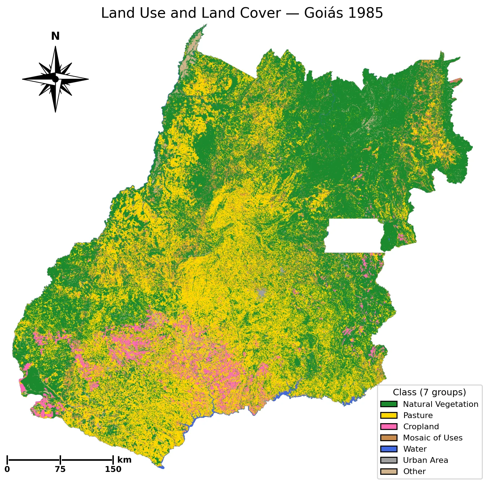
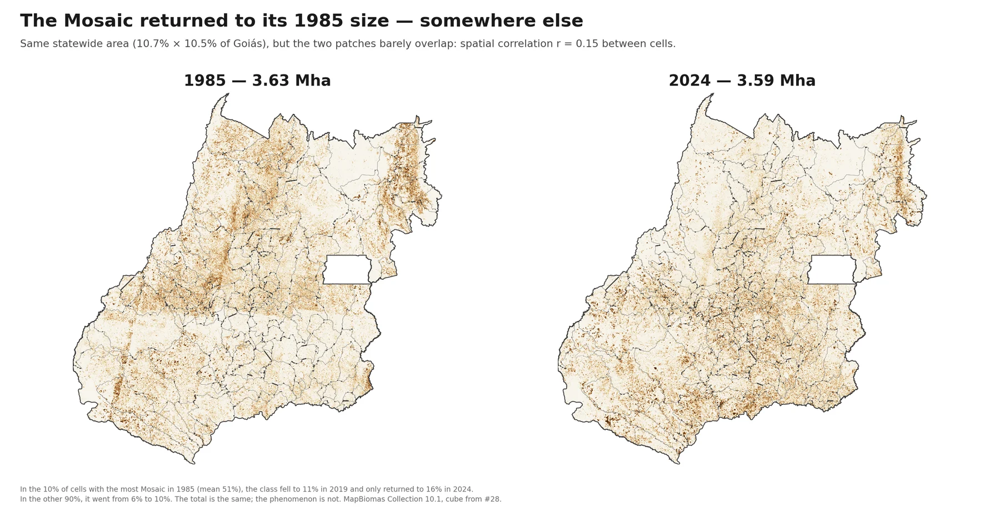
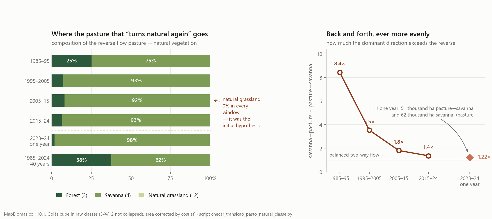
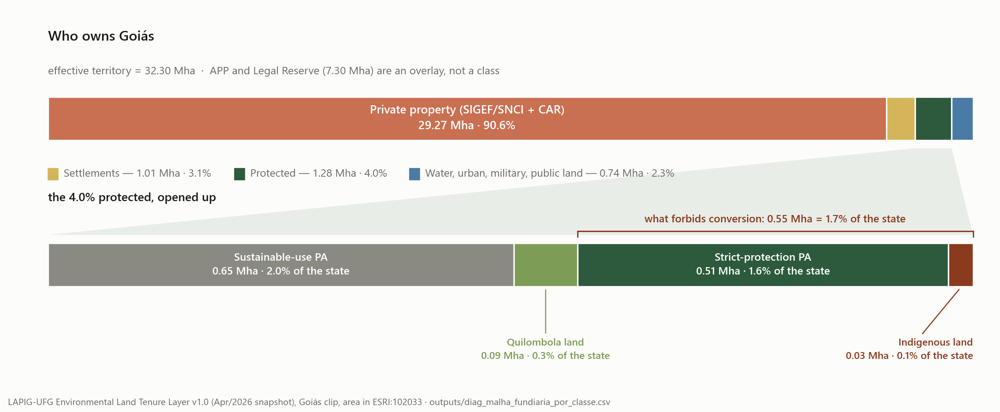
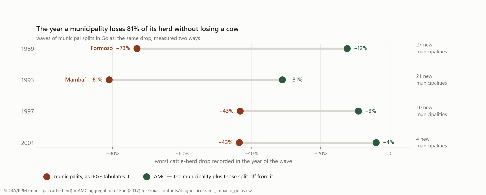
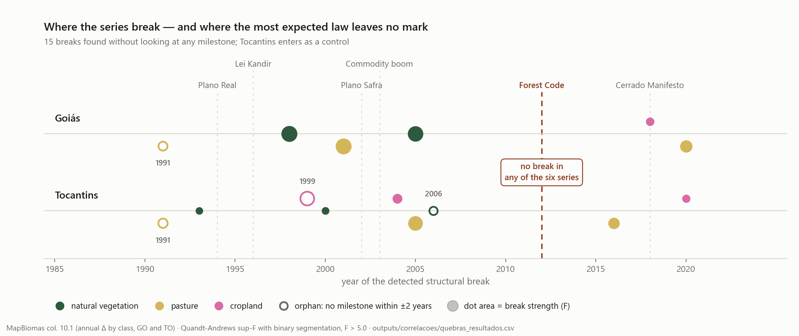

In forty years, the centre of gravity of pasture, cattle and cropland in Goiás rose
some 70 km north, while that of natural vegetation stayed where it was. The obvious explanation — soy in the South
pushing pasture away — does not survive testing. To show why, this page recounted
MapBiomas (Collection 10.1) pixel by pixel, 378 million
30-metre squares reclassified every single year since 1985, and
checked all of it against what IBGE (Brazil's national statistics
institute) measures in the field. That is 15 billion observations,
organised into three acts on the map and four questions.
Start with the map of 1985 ↓
Part 1
The 40 years on the map
The raw phenomenon, before any explanation: four decades of land use,
year by year, in the same frame.
How to read the 40 years
What follows is the raw phenomenon: four decades of land
use, year by year, in the same frame, exactly as MapBiomas classified it.
This is not yet the thesis, but what happened on the ground, before we ask
where and why. The series falls into three acts,
defined by statistical triangulation rather than hand-picked, marked by the
coloured bands on the rail above. The
black markers are institutional reference points that
give context to the inflections; they are not the backbone of the story.
The three acts
I · Pasture as inheritance · 1985–2000
II · Expansion and intensification · 2001–2019
III · Accelerated conversion under an ambiguous label · 2020–2024
How were the acts defined?
The ~2001 and ~2020 boundaries were not chosen but
detected, by triangulating independent statistical
methods:
Method
~2001
~2020
Multivariate sup-F (primary)
F = 62.2 ✓
F = 21.5 ✓ (34.1 on the corrected yardstick)
STARS (sensitivity)
2004/06 ✓
—
KL/TV of transitions
peak 2003 ✓
peak 2019–2022 ✓
Planted soy area (SIDRA, immune anchor)
—
break in 2020 ✓
Global validation: Intensity Analysis (Aldwaik &
Pontius). Kruskal-Wallis H = 20.3, p < 0.001: the
3 Acts differ significantly in rate of change. This is a
single test comparing the three periods at once, not separate
detections boundary by boundary. The candidate 4th period (~2005/06)
was rejected: total rate NS (p = 0.060).
A caveat about the 2020 boundary. When the transition
matrix was recounted in July 2026, now including the "Mosaic of Uses"
class that had previously been left out, the peak of the divergence
indicator shifted from 2020 to 2022. The four methods
no longer point to exactly the same year. The 2020 boundary holds
because the anchor that defines it passes through no classifier at
all: the planted soy area that IBGE collects in the field breaks in
2020 on its own.
Institutional reference points
1985 · Start of the series
1994 · Plano Real (currency stabilisation)
1996 · Lei Kandir (export tax exemption)
2002 · Credit and Chinese demand
2003 · Commodity boom
2012 · Forest Code
2018 · Market reorganisation
2024 · Present state
The markers give context, they do not identify: the
policies tested are federal, so there is no untreated group to compare
them against. They mark when something changed in the country, not proof
that it caused what the map shows.
How to navigate
Scroll to move forward in time: each side paragraph is one year.
Click a band or a marker on the rail to jump.
The map and the side cards sync with the year in focus.
The contents on the left jump straight to the verdict or the workshop.

Nat. vegetationPastureAgricultureMosaic of usesWaterUrbanOther
Natural vegetationPastureAgricultureMosaic of usesthe destination class that gained the most area in each municipality. ⚠️ In the recent periods the Mosaic of Uses dominates the map across much of the state, and this is largely a change of class, not of territory: from ~2021 onwards new cropland over pasture starts falling into that category. See The Case of the Mosaic of Uses.
1985
Source: MapBiomas Collection 10.1 · pixel-by-pixel (30 m) · the map is scaled down to fit the screen, so fragmented classes shrink in the drawing: the measurement is in the bar above
I. Pasture as inheritance (1985–2000)
The first map in the series already shows a frontier in motion, not a natural starting point.
The end of military rule and the high inflation of the 1980s frame the start of the series. What the map shows in 1985 is the legacy of the previous decade: almost a third of Goiás is already pasture, the result of the state-directed occupation of the Cerrado that begins with POLOCENTRO in 1975 and which the series does not reach. And this is, in sheer volume, the most destructive of the three acts, not the preamble to the other two: pasture advances 3.71 Mha in fifteen years, at 0.248 Mha per year, a pace no later period matches, and natural vegetation gives up 4.10 Mha, at 0.27 Mha per year — four times the pace of the two following acts.
Cropland, contrary to what macroeconomic instability would suggest, does not stand still. It goes from 1.17 to 3.00 Mha and soy almost sextuples (0.37 to 2.13 Mha). What holds steady in the southwest is the geography of cropland, not its size: the map barely changes address while the patch thickens. The distinction matters because the name of the act describes what dominates the landscape, not an agricultural pause that the data do not show.
The gold dominating the centre-south is pasture. The dark green of the north and northeast — Paranã, Vão do Paranã — is the cerrado that survived. Agriculture appears as pink patches in the southwest, concentrated where they will stay for the next forty years.
II. Expansion and intensification (2001–2019)
Soy paves its way in the southwest, and pasture reaches its peak and begins to retreat.
The act begins with the currency already stabilised and grain exports already tax-exempt, the two milestones of the previous act. The external context usually associated with the turn — China's entry into the WTO at the end of 2001, the systematisation of rural credit from 2002/03 onwards, and the price super-cycle — enters here as backdrop, not as a finding: none of the three is supported by a checked source, and no conclusion hangs on them. What the data show is that agriculture in Goiás goes from 9.3% to 16.0% of the territory over the course of the act.
It is worth being precise about what changes in 2001, because the natural reading of the label misses the target. It is not cropland that accelerates: it grows at 0.128 Mha per year against 0.122 in Act I, practically the same absolute pace, and soy advances at 0.116 against 0.117. What flips sign is pasture, which goes from +0.248 to −0.076 Mha per year. What changes in 2001 is not the speed of agricultural expansion, but the source of the land that feeds it: until then cropland grew while pasture also grew, both over natural vegetation; from then on it grows over pasture.
On the map, the southwest (Rio Verde, Jataí and Mineiros) starts turning pink as cropland advances over pasture. Pasture peaks around 2003, near 14.8 Mha, and begins to lose area. Cattle ranching remains dominant in extent, but the economic dynamism of agribusiness now belongs to soy.
III. Accelerated conversion under an ambiguous label (2020–2024)
Cropland advances over pasture faster than ever, and the map, read on its own, says the opposite.
This is the act in which the measurement deceives. Looking only at the satellite's “agriculture” class, conversion appears to have stopped. In southern Goiás, the flow from pasture to cropland falls by 88%. But the planted soy area that IBGE collects in the field, which passes through no classifier at all, grows 38% across the whole state in the same window. The contradiction resolves when the yardstick changes. From 2021 onwards, the conversion of pasture into cropland starts falling into the “Mosaic of Uses” class, the category MapBiomas uses when it cannot separate the two; recounted with the yardstick that sums the two classes — a coarser question, immune to relabelling by construction — that same flow in the South does not fall. It accelerates by 51%. What stopped, then, was the class, not the territory. How much of the gap between the two yardsticks is relabelling and how much is genuinely mixed use is a distinction this work declares open, not settled.
What pasture loses, cropland gains. The retreat of pasture almost quadruples in speed, from 0.07 to 0.27 Mha per year. Natural vegetation does not change pace, giving up around 0.06 Mha per year in both Act II and Act III, but it starts giving way in the north, where Cerrado still remains. Goiás reaches 2024 with 34.9% of its territory under natural vegetation and no sign of a floor. What changed was not the speed of the loss, but where it happens.
What 40 years left behind
After 40 years, who gained and who lost area in Goiás?
Five figures frame the transformation the three acts described in
detail. They come from the aggregate state-level panel (MapBiomas Collection 10.1 and IBGE/PPM).
−5.8 Mha
Natural vegetation lost · 1985→2024
17.65 → 11.88 Mha. In 1985 a little over half of Goiás was still natural vegetation (51.9%); in 2024, a little over a third (34.9%).
×4.8
Growth of agriculture
1.17 → 5.58 Mha. Soy alone grows ×12 in area (0.37 → 4.50 Mha) and ×13 in output (1.3 → 17.0 Mt).
+1.0 Mha
Pasture · a misleading net balance
10.98 → 11.99 Mha. But the trajectory is an inverted U: it grows until 2003 (peak ~14.8 Mha) and then retreats. The aggregate balance hides the cycle.
×1.34
Cattle stocking rate per hectare
1.45 → 1.94 head/ha. The herd grows 46% (15.9 → 23.2 M head) while pasture area grows only 9% — ranching intensifies.
≈ 0
Mosaic of uses · a near-zero balance
3.63 → 3.59 Mha. But the path is not zero: it falls from 10.7% of the state (1985) to 6.1% (2019) and climbs back to 10.5% (2024). The class that absorbs the conversion at the end of the series is the same one that was there at the beginning.
Why 34.9% is not comparable with the 20% Legal Reserve (Reserva Legal) requirement
It is tempting to set the 34.9% of natural vegetation beside the Cerrado's
Legal Reserve floor and conclude that Goiás has room to
spare. The comparison does not hold, for three reasons.
First, scale. The Legal Reserve is an obligation of
each rural property, not of the state. A state with 34.9%
vegetation may have most of its properties below the minimum, as long
as the vegetation is concentrated in a few places. And that is what happens
here: what remains is in the north and the northeast.
Second, the numerator. The 34.9% includes protected areas,
indigenous lands, APPs (Permanent Preservation Areas) and vegetation inside
urban areas. None of that is Legal Reserve.
Third, the date. For the deficit that already exists, the
binding floor is not even 20%. Law 12.651/2012 defines consolidated
rural area as occupation predating 22 July 2008
(art. 3, IV) and exempts from restoration anyone who cleared up to that
point in compliance with the law then in force (arts. 67 and 68). The
CAR (Rural Environmental Registry) is the registration that gives access to this
regularisation. Those who had already converted answer for what they held on
that date, not for the 20%.
On the percentage itself, a correction. The 20% applies to
almost all of Goiás, but not all of it. The Forest Code itself
(art. 3, I) includes within the Legal Amazon the regions north of
parallel 13° S in the states of Tocantins and
Goiás, and there the cerrado requirement is 35%
(art. 12, I, b) — a rule that Goiás state Law
18.104/2013 (art. 25) repeats verbatim. Measured on the state's mesh, the
strip is small: 0.27 Mha, 0.8% of the territory, split
across five municipalities in the far north (São Miguel do Araguaia, Porangatu,
Campos Belos, Montividiu do Norte and Novo Planalto). And it lies well beyond
where the frontier reached: in 2024, the northernmost centre of mass this
work measures, that of fire in natural vegetation, is still 1.5 degrees south
of the parallel. No analysis on this page treats that strip separately.
In one sentence
Vegetation lost 5.8 Mha and agriculture almost quintupled, while two
classes, pasture and the Mosaic, look stable in the balance yet rise and fall
along the way. The net balance is precisely what hides the path of the hectares.
Where the hectares went
Where did the land each class gained come from, and where did the land it lost go?
The balance above is net: it says how much each class gained or lost, but hides
where those hectares came from and where they went. The diagram crosses the
use of each pixel in 1985 with the use of the same pixel in 2024. It was designed to
tell the march: vegetation that became pasture, pasture that became
cropland. A seventh class enters faded on purpose, the
Mosaic of Uses, which tells no march at all and gets a panel
of its own just below.
Loading diagram…
Sankey diagram · pixel-by-pixel crossing 1985 ↔ 2024 (30 m).
Widths proportional to area in millions of hectares. Source: MapBiomas Collection 10.1 via GEE.
Three flows draw the march:
4.10 Mha
Nat. vegetation → Pasture
The largest flow in the series. Historical clearing for extensive ranching, much of it concentrated in the 1980s–1990s.
2.72 Mha
Pasture → Agriculture
The largest conversion between managed classes. It is what allows cropland to expand without clearing directly.
1.29 Mha
Nat. vegetation → Agriculture (direct)
Direct clearing for cropland. Smaller than the route via pasture, but it exists, and gains weight in the northeast after 2010.
The class that does not advance
The Mosaic of Uses, outside the march
In the diagram above the Mosaic is dimmed on purpose. It is the class (no. 21) that
MapBiomas reserves for pixels where cropland and pasture mix within the same
property. It needs separate treatment because, at the end of the series, the destination of
outgoing pasture changed label: what the map used to record as
conversion into Agriculture came to be recorded as Mosaic.
0.6× → 32.5×
Mosaic / Agriculture ratio among the destinations of outgoing pasture
In 2015, of every ten pasture pixels leaving the class, about five and a half went to
Agriculture and three and a half to the Mosaic. By 2024 the proportion had almost
completely reversed: 85.9% of pasture exits arrive at the Mosaic and only
2.6% at Agriculture. The magnitude of what migrated to the Mosaic tracks the soy that
IBGE measures in the field, an indication that it is the same conversion under a different label.
For this reason, in this section, every figure with "agriculture" as its destination is reported between
two yardsticks, the floor (agriculture) and the ceiling
(agriculture ∪ mosaic), and anchored to the soy that IBGE measures in the field.
In one sentence
Two flows rule: vegetation→pasture, the old deforestation, and pasture→cropland, the
recent conversion. Pasture is the intermediate link in almost everything, and the
satellite's ambiguous class moves as much area as the flows the map manages to
name.
Part 2
The investigation
The balance said what changed and from where to where. What is missing is
where within the state — and why.
The question the map did not answer
Forty years of conversion have a balance — vegetation lost, agriculture
multiplied, pasture in an inverted U. But a balance is mute about geography: it
says how much, not where. And the "where" holds the real story.
There is an obvious explanation waiting. It goes like this: cropland, driven by soy,
took over pasture in the South; pasture, evicted, retreated north, taking cattle with it.
This would be a leakage of deforestation within the state itself — an
intra-state iLUC, cropland on one side pushing the frontier
on the other. It is a good story. It is the one that best favoured this work's initial thesis.
And it does not survive testing. Sought in thirty-six different
cuts of the data, the signature that story would require appeared in none of them. What the
investigation found instead is subtler — and better documented. It is answered
in four questions.
Leg 1 of 4
survives pixel, mesh, class and error bar
Does the pattern exist?
Did the agropastoral frontier of Goiás move? And if it moved, where to?
To answer without relying on visual impression, we measured the centre of
mass of each land use — the geographic balance point, weighted
by the area of each class — and tracked it year by year across the 166 Minimum
Comparable Areas (AMCs, constant territory, immune to municipal splits).
The expectation was modest: perhaps agriculture stationary and pasture moving up. What
appeared was stronger and more uniform. Every centre rose.
Pasture's advanced +78 km; the cattle herd's, +67; agriculture's, +65. Only natural vegetation
stayed where it was — the displacement is small and the error bar includes zero, so the
correct reading is "anchored", not "moved a little". And there is a pattern
that repeats across all 40 years: cropland always sits 123–135 km south
of pasture and cattle. The frontier is not a single line — it is layers that rise together,
keeping their distance from one another.
It is worth saying what makes each centre rise, because the three layers do not tell the
same story. A centre of mass is the balance point of a distribution: it
rises when the North gains and when the South loses, and no hectare needs to move for
that. In pasture, both ends move — the South loses 1.7 Mha and the
North gains 2.2 Mha, and the South's share falls from 51% to 32%. In the
herd, it is the North that moves it, more than doubling (+127%) while the
South stays flat (−1%). In cropland, the centre rises without
cropland leaving the South: area grows everywhere and grows more in the South in
hectares (+2.9 Mha, against +1.0 in the Centre and +0.5 in the North); what changes is
the South's share, from 92% to 71%. AMC panel
The centre of mass in motion, 1985 → 2024
Each dot is the centre of gravity of one land use in the state — the mean
of the positions of the 166 AMCs, weighted by the amount of the variable there. Press
play (or drag the slider) and watch the four centres walk
north over 40 years. On the right, the same march read as latitude,
year by year.
1985
Latitude of the centre, year by year — higher = further north
The largest advance in the series. The cattle herd's +67 km follows — and the herd is measured by IBGE in the field, not by satellite.
+65 km
Agriculture · and an independent measure confirms it
Same yardstick as pasture and the herd, so the three figures are comparable with one another. IBGE's planted soy area — measured in the field, immune to the classifier — moves +48 km in the same direction, with a confidence interval excluding zero. It is not the same object (soy is the dominant component of cropland, not all of cropland), but it is confirmation from outside the satellite.
123–135 km
Cropland south of pasture/herd — in every year
It is not just "everything moved up": there is a persistent latitudinal gradient — the signature of two Goiáses. The exact size of the gap depends on the yardstick: in 2024 it is 135 km by satellite, 111 km by the corrected yardstick and 122 km by IBGE soy. Large and persistent under any of the three; that is what the claim carries.
anchored
Natural vegetation
+8 km, and the confidence interval includes zero. Saying "it moved a little" would be reading noise as signal.
A caveat that ended up reinforcing the finding
There is an awkward detail in this section, and it is better declared than hidden. The centroid of agriculture is computed by weighting each region by the area
the satellite labels as "agriculture" — and, from 2021 onwards, MapBiomas begins to
label much of the recent conversion as "Mosaic of Uses". In other words:
precisely the new cropland, the cropland on the frontier, drops out of the count. If
you look at the dotted agriculture line in the chart above, it flattens after
2019. The tempting reading would be "agriculture stopped moving up". It is wrong.
This can be tested because not every measure in the panel passes through the classifier. The
cattle herd and the planted soy area come from IBGE field
surveys. If the march after 2019 were an illusion, they would stand still too. That
is not what happens:
Northward displacement between 2019 and 2024, by measure
◆ = measured in the field by IBGE, immune to the image classifier.
Four measures say everything moved north in those five years — three of them ~10 to 13 km, the fourth 4.4 km. The
fifth says nothing moved — and it is precisely the only one whose label changed in the
period.
And there is one last piece of evidence that closes the argument. When the area that
changed label is located on the map, it is not scattered: the centre of that "hidden" mass sits
46 km north of the centre of visible agriculture, and its
growth by region tracks that of IBGE soy almost point for point
(correlation of 0.84; 1.52 against 1.53 million hectares). The conversion the
satellite stopped naming is happening on the frontier.
It is worth being exact about what this means, because it is easy to confuse with the hypothesis
that the third question tests and does not find. To say that the new cropland is in the
north is not to say that cropland in the South pushed anyone north.
It is almost the opposite: cropland is rising alongside, not pushing
from behind. One thing is the agropastoral frontier shifting; quite another is one
region displacing another. The first is what this work measures here. The second it tested —
and did not find.
The measurement error therefore points against the thesis, not in its
favour: the raw yardstick makes the march look weaker than it was. Correcting it
reinforces the finding rather than threatening it.
So why not always use the corrected yardstick? · the limit of the union
Because it is only interpretable within the window in which the label change happens.
Summing "agriculture ∪ mosaic" across the 40 years returns
−60 km — agriculture moving south. The number is
real and is in the data, but it does not mean what it seems to.
The reason: in 1985 the "Mosaic" class already existed and was enormous — 3.63 Mha,
10.7% of the state — and sat well to the north. It was not hidden soy;
it was land of undifferentiated mixed use, another thing entirely. Over the series it
shrinks (down to 6.1% in 2019) while real cropland grows in the south. Summing the
two in 1985 and in 2024 compares two different objects, and the result mainly measures
the old Mosaic dissolving — not cropland retreating.

What to look for. The Mosaic occupies practically the same area at both ends — 3.63 Mha in 1985, 3.59 in 2024 — but the two patches barely overlap (spatial correlation between cells r = 0.15): the 1985 one dissolved; the 2024 one emerged somewhere else. That is why summing "agriculture ∪ mosaic" across the 40 years mostly measures this reshuffling, and not cropland. Source: MapBiomas Collection 10.1, pixel-by-pixel cube from #28.
For this reason the union yardstick enters here as the ceiling of a short window
(2019–2024, where the label migration actually occurs), never as a long-series
yardstick. It is the same discipline used everywhere the measurement
turns ambiguous: report the interval and check against an outside source — and say
which question each yardstick can answer.
Robustness, one line each
It is not an artefact of the areal units (MAUP). We redid the calculation pixel by
pixel, with no administrative mesh at all: the march reappears within 1–2 km of the original
value (pasture +79.2 against +78 km; agriculture +66.9 against +65). (#43)
Nor is it an artefact of class aggregation. Opening the aggregate into
formations, natural vegetation is not stationary inside: the
forest formation shifts north (+8.7 km, 95%CI [+2.5; +15.1]) and
native grassland too (robust in direction and imprecise in
magnitude, with a wide interval); the one whose interval includes zero is the
savanna formation — and it is that one, the most extensive of the three, that dominates the
aggregate. What looked like immobility of vegetation is the sum of one stationary class with
two that moved. This was a self-correction: the average figure hid distinct behaviours
inside. (#44)
The whole march comes with an error bar. Bootstrap over AMCs
(B=2,000): that is where the "anchored" verdict for vegetation comes from. (D19)
And it is not generic displacement — two controls separate the frontier from the rest.
The urban area does not follow: it moves 8 km south
(95%CI [−19; −1.5]), in the opposite direction to the frontier. And dairy — the ranching
of the consolidated basin in the South — rises less than half as much as the total herd
(+30 km against +67 km). The effect is that cattle move away from dairy:
the gap between the two centres more than doubles, from 30 km in 1985 to 68 km in 2024.
What marches is beef ranching on the frontier, not "the whole map moving up".
(#44)
A fifth layer, and it runs ahead of them all: fire
The four layers measured above rise while keeping their distance from one another. There is a fifth,
and it goes ahead: the centre of mass of fire in vegetation sits north
of the centre of conversion in 39 of the 39 years in the series, with an average
lead of +73 km — and it never switches sides.
This is a geographic vanguard, and only that. The tempting reading would be
"fire opens the way": it was tested and does not hold up in time — the
temporal lead vanishes under log transformation, reverses when the drought
years of 1985 and 2010 are removed, and the aggregate precedence test comes out null. Fire
co-evolves with conversion under a common disturbance; it marks where the
frontier is, not when it will move. (#41 · the same discipline as
D16 that Leg 3 applies to Granger)
Answer
The centre of gravity of pasture, herd and cropland is 65–78 km further north in 2024
than in 1985 — pasture in front, cropland ~120 km behind, natural vegetation anchored. In
pasture and herd the North gains hectares and head; in cropland, what changes is each
region's share.
Leg 2 of 4
both populations in 5 of 5 regions
What is the mechanism?
If the whole frontier marched, which conversion — and in which part of the state — moved it?
The march is the net result of two different conversions, and they are not in the same place.
In the South, the transition that rules is pasture → cropland: intensification,
land changing function. In the North, it is forest → pasture: frontier,
new land being opened. Two Goiáses. The measure that supports this division is
precisely the one that does not depend on the satellite's ambiguous class — the
veg→pasture flow, which plunges −49% in the South between Acts II and
III and gives up only −13% in the North.
That answers where, and answers it well. But it does not answer how. Knowing
that the South converts pasture into cropland does not tell us whether that pasture was a planned stage
of a farming system or a patch of farm sitting idle for twenty years that finally became
soy. These are two different economies with the same name on the map. It is that distinction
this leg pursues — and it forces a change of measure.
The measure that reveals intent: the age of the pasture
A three-year-old pasture that becomes cropland was, almost certainly, planted with that
in mind: grass as a stage in a cycle, not as ranching. A twenty-five-year-old
pasture that becomes cropland is another story — it is land that sat idle and that some
new opportunity made profitable. The age of the pasture at the moment of
conversion is the closest thing to the farmer's intent that a satellite
can see.
We did not sample: we counted, pixel by pixel, all 44.6 million
conversions from pasture to cropland in Goiás — 3.8 Mha, 11.2% of the state. Of those,
16.0 million have a known age; the others were already pasture in
1985, when the series begins, and their age is therefore truncated — there is no way to know whether
that grass was five years old or forty.
What to look for. In panel (a), the grey curve is the raw data — and it does not have two visible peaks: it has a young peak and a long shoulder. The dashed line shows what a single pasture population would produce, and it misses both ends, underestimating the young peak and the old tail. The reason the second group does not form a second peak lies in the standard deviations: young pasture is concentrated (σ≈1.6 years), old pasture is five times more spread out (σ≈7.5 years), and a wide population becomes a plateau, not a spike. In panel (b), the same division appears without fitting any model: all the events are the same thing — pasture that became cropland — and the colour shows what was in that pixel before it became pasture. New pasture that becomes cropland had, in half the cases, already been cropland before (cropland→pasture→cropland: that is rotation); thirty-year-old pasture almost always came from natural vegetation (cerrado→pasture→cropland: that is activated reserve). The middle band is the Mosaic of Uses, the class in which the classifier did not separate the uses — it gets a band of its own, rather than being added to either side, because it is classification uncertainty and not known origin. Source: MapBiomas Collection 10.1, pixel-by-pixel census from #28C. Same figure as in the qualifying text, at screen resolution.
There are, then, two populations of pasture being converted in
parallel, and it is worth naming them carefully, because the name is already half an interpretation. The
young one is short-cycle pasture — grass that lasts a few years between
two crops, and which the right-hand panel shows to have come from cropland. It is
what agronomy calls crop-pasture rotation. It is
compatible with crop-livestock integration,
but does not prove it: the satellite sees the grass, it does not see whether there were cattle on it. The old one is
activated reserve — consolidated pasture, opened in the Cerrado one or
two decades earlier, which some change in price, credit or logistics made
worth converting now.
Before going on, an objection has to be eliminated — and it has two versions. This
curve sums forty years of conversions across the whole
state. Perhaps there are no two populations coexisting anywhere:
perhaps there are different regions summed together, or different periods summed together, and the
appearance of two groups is only the effect of stacking distinct things. It is the same
suspicion on both axes, and it has to pass the same test: isolate each
piece and look again.
First axis: one mechanism in each half of the state?
If the South intensifies and the North opens frontier, the almost automatic assumption is that
each half of the state ended up with one of the two populations: short-cycle pasture
in the capitalised South, activated reserve in the recently occupied North. It is elegant, it fits
with everything else, and this investigation did at one point assert it. Testing it
is simple: if it holds, isolating each region should change the shape of the curve — losing
one of the two groups, or nearly.
Click a region on the map to see its distribution alone — and,
at the end, switch the measuring yardstick.
The two populations coexist inside every cell of the map
Each cell is one AMC
and is coloured by the verdict, not by age: do the two populations
appear inside it? The thick outline marks the 5 mesoregions, and that is what
you click.
All of Goiás
What counts as conversion:
The first yardstick is the immune one: it does not depend on the satellite
managing to separate cropland from mixed use, so no conversion vanishes from the count
when the classifier changes its mind. The second is the strict one —
cleaner by definition, and exposed for exactly that reason.
Under this yardstick, the North and Northwest gain a visible trough that the South,
Centre and East do not have. It is real — and it is the artefact: see what happens on returning
to the immune yardstick.
Go through the five regions and the shape is practically the same. There is no half
of new pasture and another of old pasture: there is the same pair of populations operating side by
side across the whole state. The 5 mesoregions are bimodal, and
all 166 AMCs are so internally as well — under the immune yardstick,
which is the map's; under the strict one, where 2 AMCs lack sufficient conversion, it is 162 of
164, and the two exceptions fail on the same side (the young group's weight too low for
the test to count it, not the absence of two groups). A map with no
variation at all is the visual form of the number that settles the question: the mesoregion
explains 0.5% of the variation in age.
The yardstick that changes the answer — and why the right answer is only one
It is worth pausing on a detail, because it nearly misled this investigation again. If
you switch the map's yardstick above to pasture → cropland only, the shape
does start to change, and a great deal: the North and Northwest gain a sharp trough in the
middle of the distribution, while the South and East keep their peak and shoulder — and the Centre falls
in between, with a shallow trough. It is not an optical illusion — measured, the Northwest's trough
has a depth of 42%, the North's 27%, the Centre's
only 8%, and the South's and the East's simply do not exist. By the distance between the
shapes, the five regions split into two blocks: the southern trio on one side (the
Centre among them), the northern pair on the other.
And it is all artefact. The strict yardstick only sees the conversion the satellite labelled
as agriculture — and the label it loses, mixed use, is not
lost evenly across the state: it vanishes more in the north. What remains in the north is a sample
biased towards the old end, and it is that which digs the trough. Close the hole and the
difference disappears: the distance between the shape of the South and that of the North falls from
0.22 to 0.02 — a tenth — and the Northwest's trough from 42% to
6%.
The elegant hypothesis fell, and fell twice: first on the mean age, now on the
shape of the distribution. The less the region explains, the more robust the
finding becomes that the two populations are universal across the state — and not a peculiarity
of half a dozen municipalities.
How the regional gradient was found to be false · the self-correction
The claim that fell was: "the South converts young pasture (median 9 years), the North
converts old pasture (16 years)". The flaw was not in the arithmetic, it was in what
goes into it. Age is only measured when the pixel's destination receives the
agriculture label — and, at the end of the series, much of the conversion comes to be
labelled Mosaic of Uses by the satellite. Those events vanish from the
sample without warning, and they do not vanish evenly everywhere: they vanish more in the north.
The "gradient" was, in large part, that selection.
The check was to redo everything with the coarse question — pasture → (agriculture
∪ mosaic) — which is immune to the label change by construction because it does not
depend on the classifier separating the two classes. Under that yardstick the South→North amplitude
falls from 7 years to 2, the ordering of the regions
scrambles, and the share of variation attributable to the mesoregion plunges from 3.7%
to 0.5%. Three independent routes arrived at the same
place. What did not change under the new yardstick was the coexistence: it stayed
at 5 of 5 regions, and went from 9 to 10 of the 10 region×period cells.
That is why the map above colours the verdict and not the age. A map coloured by
mean age would be beautiful, would tell a clean story — and would be showing an
artefact of the classifier.
Second axis: what if they are merely different periods?
That leaves the other half of the objection, and it is more serious than it looks. If Goiás
converted new pasture in the 1990s and old pasture in the 2020s, then summing the
four decades manufactures two populations that never coexisted — they would be two
regimes in sequence, not two mechanisms in parallel. It would change the entire thesis of this
leg.
That is not the case. Isolating each period, the two populations are still
in there: in Act II alone — 32.5 million conversions, the largest block in the series —
and in Act III alone, in the five mesoregions of each. That is
10 of 10 period×region cells. It is not a stacking of periods.
And there is a detail worth more than the result. Act I is unimodal
everywhere — and it could not be otherwise. A conversion in 1995
happens on pasture that is, at most, ten years old, because the series begins in
1985; to see a twenty-two-year-old pasture being converted one has to
reach 2007. In the first period, the old population is
invisible, not absent. Reading that "single group" as a portrait of the
territory — rather than of the observation window — would be inventing a story of
transformation that the data do not tell. That is why the count above starts in
Act II.
The two populations within each period, cell by cell
Count of mesoregions in which the two populations appear within the
period, under the two measuring yardsticks:
Period
pasture → cropland only
pasture → cropland or mixed use
Act I · 1985–2000
outside the test — the old population is not yet observable
Act II · 2001–2019
4 of 5
5 of 5
Act III · 2020–2024
5 of 5
5 of 5
The only failure is the Northwest during Act II, and it is by the same criterion as the
exceptions on the map: the young group exists, but weighs too little for the test
to count it. Under the immune yardstick it disappears.
A temptation to avoid: the trough between the two populations is much
deeper in Act III than in Act II. That is not old pasture
gaining ground — it is the same window effect, now in reverse. The later
the period, the more age fits inside it, and the more separated the two groups
appear. The time axis remains suspended.
If it is neither the region nor the period, what decides the age of the pasture?
The two obvious axes are ruled out: the two populations are not summed regions
nor summed periods — they do coexist, in fact, within every cut of the data.
Two families of explanation remained, and each makes a different, checkable prediction.
The first is structural: age would be decided by the type of
production system in place. Here it is necessary to be exact about the instrument. The
Agricultural Census has no variable for crop-livestock
integration; the closest available is no-till farming —
sowing without turning the soil, keeping the residue of the previous harvest. That is a
soil conservation practice, not a practice of integration with
livestock: the two often go together in the mechanised cropping of the Cerrado, but
no-till does not imply cattle on the area nor rotation with pasture. What it indexes
well is modern, capitalised grain farming — the setting in which short-cycle
pasture would make sense. With that caveat, the prediction is testable:
municipalities with more no-till should convert younger pastures.
It is a prediction that could fail, and that is why it was tested.
The second is about flow: age would be decided not by the structure
in place, but by the shock of the moment — rural credit arriving, value of output
rising. There old pasture would be activated by opportunity, and conversion would follow
the money, not the system.
the evidence does not decide
Structure · no-till farming
In the simple correlation the prediction holds: more no-till, younger
pasture. Except that no-till is also concentrated in the South — like almost everything in
Goiás. Holding the spatial gradient, the association shrinks by about a third and
lands on the boundary of significance without crossing it; and it does not survive
correction for multiple testing. This holds under both measuring yardsticks. In other words:
the data do not decide. That is not the same as saying there is no effect —
see below.
real, and in reverse
Flow · rural credit
It is the only association that survives the spatial control, the correction for multiple
testing and the change of yardstick — under the immune yardstick it even strengthens
(r +0.22 → +0.30). It is not a labelling artefact. But it points to the
opposite side of what was expected: where credit grew most, the
converted pasture is older. That fits reserve being activated
by new money, not "credit finances rotation". Two large
caveats: it only exists when the recent years are included — in the
cut up to 2019 it is practically zero — and the mechanism was not investigated.
Why "the evidence does not decide" and not "there is no effect" · a null that had to be withdrawn
This investigation has previously published, about no-till, a stronger claim
than the present one: that there was no effect of its own — a clean null. It
was withdrawn, and the reason is instructive.
That null had been obtained when each municipality's age was estimated
from a few dozen randomly drawn pixels. Noise in the variable one wants
to explain pulls any correlation towards zero — so a null measured
on a noisy outcome is indistinguishable from lack of power.
On redoing the same test, in the same municipalities, with age measured by the pixel
census instead of the sample, the association that had been null came to cross the
usual threshold. It was not more data that changed the conclusion: it was less measurement error.
With the complete set of municipalities, the estimate returns to the knife's
edge. Hence the current verdict: indeterminate.
A clean null would close the question; an indeterminate one does not — and the
difference between the two is exactly the kind of thing an examining committee should be able to
press on.
The rule that came out of this holds for the whole work and is recorded as
D14: in Goiás, almost every variable of interest slopes
towards the southwest along with agricultural suitability, so no cross-sectional
comparison can be read before holding the spatial gradient — and the two
sides of a comparison must receive the same control, on pain of
the verdict measuring the design of the test rather than the territory.
Neither family explains the age of the pasture. Structure does not decide;
credit leaves a real mark, but a small, recent one pointing to the
opposite side from what the hypothesis asked for — and still without a mechanism. The
choice between turning the grass over in three years or leaving it thirty is not read in the region, not read in the
municipality's production system, and barely read in the money that reached it. It happens
below the scale these data reach — in the field, on the farm,
in the history of that property. It is a limit of resolution, and it points to
where a next investigation would have to look: data by rural property, not municipal
aggregates.
Answer
The mechanism is two pasture populations converted in parallel —
short-cycle pasture, in three to five years, and old reserve activated fifteen, twenty,
thirty years later. Geography separates which transition dominates each half of the
state, but it does not separate these two populations: they coexist in
practically every cell of the territory, and what decides between one and the other lies below
the reach of these data.
Leg 3 of 4 · the climax
0 of 36 tests with the mark of a push
Is it cropland in the South pushing the North?
Is the pasture the South lost the pasture the North gained?
The two previous legs delivered two facts that, set side by side, almost
write the conclusion by themselves. The whole frontier moved north. And it moved
doing opposite things in each half of the state: in the South, cropland taking
the place of pasture; in the North, pasture taking the place of forest.
Add the two and the story assembles itself: the pasture evicted from the South went on to reappear in the
North, on top of the Cerrado. It would be an intra-state iLUC — a
leakage of deforestation within the state itself, with soy in the Southwest at the origin
and forest in the North on the bill. It is the hypothesis that most favoured this work.
It has a problem of logic before it has a problem of data. A coincidence in
space is not a mechanism. Two independent processes — cropland
advancing in the South, pasture advancing in the North — driven by the same external
force draw exactly the same map that a push would draw. To
separate the two readings one has to leave the map and look for a
signature that only the push produces.
What would have to appear — and where to look
There are two signatures, and both are specific enough to be able to fail. That is
what makes them a test, and not an illustration.
In time. If cropland in the South pushes, it has to move
first. Expansion in the South must precede the advance of
pasture in the North — not merely accompany it.
In space. A push has direction. If my neighbours' cropland
to the south grows and that evicts pasture upward, my pasture has to
grow. In the test this becomes a number — call it
θ — and the push hypothesis requires it to be positive.
The neighbours to the north enter as a placebo: no effect at all should
pass through them.
If, instead of a push, what exists is co-evolution under a common force, the prediction
is different and equally checkable: no precedence, no positive θ — and a strong
local effect, where cropland comes in and pasture goes out right there, without
travelling anywhere.
The signature that does not appear
If cropland in the South pushes pasture to the North, the push should leave a mark
in the data. We looked for that mark in two tests — one in space
and one in time — run across several combinations of measure, window and outcome.
The mark did not appear.
The spatial test measures θ: when the cropland of the neighbours to the south of a
municipality grows, the pasture of that municipality should grow along with it
(θ > 0) — that is what "pushing upward" would mean in the data.
It was run under three measuring yardsticks, each crossed with two time
windows and two outcomes (pasture and herd), totalling
twelve specifications. The push hypothesis needs at least
one positive θ distinguishable from zero somewhere.
The twelve specifications of the spatial test
Each point is one of the twelve combinations (2 windows × 2 outcomes ×
3 yardsticks). ◆ = soy measured in the field by IBGE, immune
to the classifier. Note that the largest signals are under the satellite
yardstick and shrink under the two clean ones: the little that looked like signal depended
on the label. Source: #34, D26 audit.
With the eight-municipality neighbourhood shown in the chart, all twelve estimates
are negative: when the cropland of the southern neighbours grows, local pasture
decreases instead of increasing. That count depends on the neighbourhood
chosen. Redone with four and with twelve neighbours, the sign stays negative in every
pasture cell, but in the herd some estimates turn positive, all with p above 0.70,
that is, zero in practice. What holds across the three neighbourhoods is that
no estimate falls significantly in the zone the hypothesis requires.
This is not a p-value refuting a thesis: it is the absence of a signal the
hypothesis required, sought in twelve cuts of the data and three
neighbourhoods and not found in any.
The second test — temporal precedence — asks whether the
expansion of cropland in the South precedes the advance of pasture in the North.
If the push exists, the South has to move first. Twenty-four
combinations of yardstick, window, outcome and lag: the smallest p is
0.078 — none significant. That null has limits:
with 38 annual differences, the test rules out a strong push (~93% power)
but not a moderate one (~48%). On its own, it would not close the question. Together with the twelve
spatial specifications, it completes the picture.
0 / 12
Spatial test · θ is never positive
No positive θ under any yardstick, window or outcome. The only p<0.05
is under the yardstick the classifier contaminates — which is why this work does not
cite that p=0.02 as if it carried the conclusion.
0 / 24
Temporal test · the South never comes first
In no combination does cropland in the South precede pasture in the North. The test
rules out a strong push, but not a moderate one — and claims no more
than that.
Two tests, thirty-six specifications, and the mark of the push does not appear.
But the same design of the spatial test reveals what exists in
its place: a local effect.
"Local" here has a precise sense. The θ in the chart above measures the effect
of the neighbours — if cropland grows to the south, does my pasture
grow? The local effect measures what happens inside the municipality
itself: if cropland grows here, does the pasture
here decrease? That is the difference between a push (at a distance)
and substitution (in the same place).
−0.52 to −1.14
Local effect · where cropland comes in, pasture goes out right there
p<0.001 in five of the six cells (the exception is IBGE
soy in the short window, with few years). The coefficient doubles
when the measure is corrected (−0.52 under the raw yardstick → −1.14 under the one that includes mixed
use): substitution looks more complete when the label does not hide the
transition. It is the largest effect in the whole leg.
The contrast is the entire argument. The local mechanism — cropland
replaces pasture where it is — appears in almost every
cell, with the largest coefficient of the leg. The mechanism at a
distance — cropland pushing pasture far away — appears in
none. Each half of the state does what prices dictate; one does not dictate to the
other.
The loose end that nearly reversed the thesis
One loose end remained, and it was the most uncomfortable of all. The temporal test, run
in reverse, gave a strong result:
the North would precede the South (p=0.0007). If it were real, it would not save the
push hypothesis — it would turn the entire thesis upside down. A result
like that, even with a small N, called for investigation, not a footnote — and,
investigated, it was spurious regression.
A · the result that reversed the thesis
Run in reverse, the test came out significant — the North would "precede" the South.
B · the proof that it is spurious
Any smooth series "predicts" any other — the North even "precedes" the pasture of
the South itself, which no economic mechanism would explain. With the correct method
for integrated series (Toda-Yamamoto), the precedence disappears in both directions.
Why a strong correlation may mean nothing: when two series are
very "smooth" — rising slowly and without jolts — one always appears to predict the
other, even with no relationship at all between them. It is a defect of the test, not a finding
about the field. (#42 → D16)How a precedence is proved spurious · the method
The diagnosis came in three steps, and none of them is "the N is small".
1. The yardstick was wrong for the material. The original test
compared an already stabilised series (cropland in the South) with one that
remains unstable even after being converted into year-on-year changes (
pasture in the North). Comparing the two is an unbalanced calculation — the classic setup
that manufactures precedence where there is none.
2. The correct method erases everything. There is a test designed
precisely for series like these (Toda-Yamamoto). Under it, the precedence disappears
in both directions: p=0.45 in the North→South direction and p=0.25 in the
South→North. It matters to state both: this also removes any
warrant for claiming that the South leads. The verdict is no leader,
not "the other side won".
3. The placebos light up where there is no mechanism. This is the cleanest
evidence. Three of the four directional placebos light up, and the most
eloquent is pasture in the North "preceding" the pasture of the South itself with
exactly the same p as the headline finding (0.0007) — no economics would explain
that. The fourth, against cropland in the Centre, sits at p = 0.056: it does not
light up, and neither does it rescue the hypothesis. A precedence that appears in almost
any pair of smooth series is not a mechanism; it is a defect of the instrument.
Out of this came a rule that applies to the whole work
(D16): no "who comes first" result on an aggregate
series is read as causal before passing a stability diagnostic,
a robust method and a battery of placebos. It was applied retroactively to other
pipelines. (#42)
If nobody pushes, what commands the march?
A legitimate question remains: if the two mechanisms do not command each other, why do they march
together? The answer is that both respond to the same external stimulus — a
common macro impulse: exchange rate, credit and commodity prices, which
hit the whole state at the same time and make land worth more or less
everywhere. Except that this impulse does not fall on uniform ground: it lands on a
floor that was already unequal — and the strongest candidate for the role of trigger is the
real exchange rate.
The mechanism in one sentence. Goiás produces soy and beef for
export, both priced in dollars. When the real depreciates, the same exported tonne
yields more reais to the producer — without the international price
changing. The profitability of planting and of raising cattle rises; converting Cerrado into pasture
or cropland comes to pay better; and demand for land grows. That is how a
macro variable — the exchange rate — becomes the best aggregate reading of demand for land: it does not
create a farm, but it pulls the trigger that makes advancing worthwhile. The literature
sizes the link: the depreciations of the late 1990s account for
on the order of 63,000 km² of soy in Brazil, 29% of the national area in 2009 (Richards, 2012). This is not "demand" in
the sense of the final consumer; it is the profitability channel that moves the producer's
demand for land.
But if the exchange rate hits all of Goiás, why does the march move north rather than
spreading evenly? Because the ground is unequal: the South has better land for
cropping, and the North, worse. That difference is what is called the
suitability gradient. The measure comes from a physical dataset that knows nothing
about who plants what: Embrapa's agricultural suitability map
(scale 1:500,000), which assesses soil, relief and climate across 8,284 polygons clipped
to Goiás. On Embrapa's scale of 1 to 6 (6 = best), the gradient appears
on its own: South 4.69 > Centre 4.47 >
North 4.17, and the correlation with latitude is −0.44
(−0.40 by Spearman; the three regions differ at p = 0.0002). Measuring that
gradient with a physical dataset, rather than with the land use one is trying to explain,
is what avoids the circular argument. (#52)
It is the combination of the two — the macro impulse and the gradient — that commands the pace:
when the exchange rate jumps, conversion advances more where suitability is frontier-grade.
The model tests exactly that interaction. And here two caveats enter that
change the weight of the result. The first is about strength: under the correct inference for that
kind of design — a single shock per year
for the whole state — the finding points in the predicted direction without crossing the 5% cut. The
correct p for this design sits at ≈0.07–0.13. What sustains it is not statistical significance, but
rather specificity: every test that should come out null comes out null, and
the signal does not depend on any particular year. That is why the exchange rate appears on this
page as the best candidate, never as a proven cause.
The second caveat is about what is being measured, and it is more recent
(D28, August 2026). That −0.44 between suitability and latitude has
two readings. It shows that suitability is not circular — good. But it also shows that
it moves together with the South→North axis, and the axis carries everything that varies in that
direction: age of occupation, infrastructure, distance to markets, land price.
The specificity tests below are all about the outcome; none asks
whether the chosen exposure is the right one. When latitude is put into the same
regression, suitability loses 62% of its magnitude and ceases to be significant,
while latitude barely moves. The leg's conclusion survives intact — the
reorganisation is coordinated by a common force, and not by a push between regions
— but the gradient comes to be named by what the data support: it is the
South→North axis, and suitability is the yardstick with which it was measured, not
the identified channel. (#56)
The specificity battery, test by test · what sustains the exchange rate
The finding under test is: under exchange-rate depreciation, the cattle herd grows more where
suitability is frontier-grade. A result like that may be real or may be some artefact
the regression picked up. What separates the two cases is not the finding's p —
it is the behaviour of the tests that, if the finding is real, have to come out
empty.
Test
If the finding is real…
Result
The finding · exchange rate × suitability → herd
effect, in the predicted direction
β = −0.033 in the predicted direction, but permutation p 0.07–0.13 — does not cross 5%
Outcome placebo · → urban area
null
p = 0.34 ✓
Outcome placebo · → water
null
p = 0.33 ✓
Placebo in time · exchange rate at t+1
null — the future does not explain the present
p = 0.105 ✓ (the tightest of the four)
Placebo in time · exchange rate at t+2
null
p = 0.77 ✓
Jackknife · redo dropping each year
stable signal
constant signal in 38 of 38 years ✓
A clarification about the p-values in this table, because mixing p yardsticks
would be the same error D20 corrected. The finding's p is the
permutation one — the conservative one, obtained by shuffling the shock itself
across years. The placebos' p-values are the clustered ones, which D20
showed to be optimistic. That cuts in favour of the reading: under the conservative yardstick the
placebos would come out even more null than they appear here. What cannot be
done is to compare 0.105 with 0.07–0.13 as if they were the same measure — they are not.
And a caveat the pipeline records: the placebo in time comes out clean under the
exogenous specification (the physical-suitability one). Under the old
specification, with the area proxy, the same lead is borderline
(p = 0.062). It is one of the reasons the exogenous version is the one this page
reports. (#54 → D20 · exposure from #52)
The symmetry test: silo, bank and cropland arrive later
If grain silos, credit banks or cropland were pulling the
frontier north, they should be ahead of it — further
north than pasture and cattle. If, on the contrary, they merely consolidated what had already been
opened, they would be behind, to the south. The test is to measure where the centre of
gravity of each of those layers lies.
Where the centre of gravity of each layer lies, relative to the frontier
How to read this: each bar shows how far south that layer
sits from the pasture-and-cattle frontier. If any were pulling the march, it would appear
to the left of the line (north of the frontier) — in the grey zone that stayed empty. The
pink bar is context, not infrastructure: it is the cropland core, the same gap of
123–135 km that Leg 1 measured. The two
infrastructure layers are behind the frontier — and storage, the furthest back
of all, sits practically on top of the cropland core
(16 km from it), in the grain belt of the Southwest. Sources: #50 (credit),
#53 (storage), #32 (areas).
No layer appears in front — all are behind. The centroid of
rural credit sits ~70 km south of pasture, and that gap never
closes (it was 77 km in 2013, it is still 69 km in 2024). That of storage
capacity is further still: ~150 km south of pasture, sitting
practically on top of the Southwest grain belt. The
export chain, measured separately, co-moves without leading. The reading is
a single one: silo, bank and port consolidate where production has already settled.
None of them is at the tip of the march — all follow it.
What this test rules out · and what it does not reach
This is the part that matters most in a negative conclusion, because it is where it can be
challenged. What was tested has a precise address: a channel of
intra-state displacement, between immediate neighbours (the eight
nearest cells, filtered for being to the south), in the same year,
plus temporal precedence of one to two years between the regional aggregates.
Ruled out, with comfortable margin: that cropland in the South
pushed pasture to its northern neighbours in a way that is local and visible in the
series; and that a strong temporal push exists (the test's power is ~93%
for a large effect — had it existed at that size, we would have seen it).
Not ruled out: a long-range
displacement that skips the neighbours and reappears hundreds of kilometres away;
one with a very long lag, beyond the lags tested; a moderate
temporal effect, which 48% power does not reach; and any channel crossing the
state border — Goiás soy displacing ranching to Pará or
Maranhão is another question, one these data do not ask.
The strength of what stands does not come from a p-value — it comes from
specificity. The hypothesis made a risky prediction; it was
sought in twelve spatial cuts and twenty-four temporal ones, with directional
placebos and three independent measuring yardsticks, including one the satellite does not
produce; and the mark it requires never appeared, while the mark of the rival
explanation appeared in all of them. It is that combination that sustains the conclusion, and that is how
it should be presented. (#34, D26 audit · #42 · #50/#53)
AnswerNo. The signature a push from the South onto the North would require does not
appear in any of the twelve spatial cuts nor the twenty-four temporal ones — and what
appears instead is local substitution, with p < 0.001 in five of the six cells. The two
mechanisms do not command each other, and the pattern is consistent with a common macro impulse acting
along the South→North gradient: the test points in the predicted direction without crossing the 5% cut.
Leg 4 of 4 · the ceiling
the rate falls with depletion in 16 of 16
Why did the march slow down?
In Act III (2020–24) the South almost stops opening new land. Did demand run out?
The previous leg ended without a commander: neither does the South command the North, nor the North the
South — both respond to the same market force, each on the terrain it
has. Except that a market force, on its own, does not know how to stop. As long as the price rises, it
pushes. And in Act III something stopped moving.
The intuitive explanation is that the market cooled. It is wrong, and it is the error that makes
this last leg interesting: in Act III demand was at its peak.
What ran out was not a buyer. It was land.
First: what exactly stopped — and where
Two clarifications before any arithmetic, and both change the question.
It was not "cropland" that braked. That reading would be exactly the
label artefact that Leg 1 defused — cropland
appears to stop at the end of the series because the satellite starts calling "Mosaic of
Uses" what it used to call agriculture. What braked is the
opening of natural vegetation, measured by veg→pasture:
a transition whose origin and destination both lie outside the ambiguous class, and which
the label change therefore does not touch. It falls −49% in the South and
only −13% in the North.
And it was not the state that decelerated — it was the South. In the aggregate for
Goiás the flow of Cerrado conversion went from 0.071 Mha/year in Act
II to 0.072 in Act III: practically the same number. What changed was
the address. It fell 37% in the South, rose in the Centre and the North. The march did not lose
speed; it changed place. That is why the question of this leg
is not "why did the frontier stop" — it did not stop — but rather
what drove it out of the South.
Demand did not fall: it was at its peak
The three demand signals the work has tracked since Leg
3 rise, on average, in Act III, and not by a little: the real exchange rate goes from 134.5 to
169.0 (the higher the index, the more depreciated the real — and the more
exporting pays), the price received for soy from 104.4 to 186.4,
and rural credit in Goiás from 14.3 to 24.1 billion reais (in
December 2024 reais). The soy
actually planted, which IBGE measures in the field and the satellite does not classify, grows
38% in the same window.
The credit average, however, hides the shape of the series. It surges in 2021–2022
(29.6 and 34.2 billion) and collapses in 2023–2024, ending at 15.8
billion — below the 2013–2019 average. Exchange rate and price stay high to the end
of the window; credit reverses in the last two years. Of the three signals, then,
two hold and one turns — and what sustains the reading of high demand in
Act III is those two and the soy area actually planted, not the credit average.
But the test that settles the question is not the state's — it is the South's own, where the
braking happened. If the South had lost its appetite for land, it would have stopped
converting any land. That is not what happened: in the South of Act III the conversion
of pasture into cropland-or-mixed-use rises 51% and the annual increment of planted soy
rises 244%, at the same time as the opening of new Cerrado falls by
half. The South did not stop wanting land. It stopped taking land from the
Cerrado and began taking it from pasture that was already open.
Here belongs the question this differentiation always provokes — and it has two halves. The
first: yes, this regional contrast is the march itself — the frontier
leaving the South and reappearing in the Centre and the North is exactly what "march north"
means. The second is more delicate, because the pattern looks like iLUC (leakage,
the activity of one region pushing the conversion of another): if the South swaps
Cerrado for already-open pasture, the cattle that left that pasture would have to go somewhere, and
the North, which accelerates, would be the destination. That hypothesis is legitimate, and it was therefore
tested — across 36 cuts, the displacement signature it
requires (one region preceding another in time) appeared in none. What the
data support is a coordinated reorganisation under the same market impulse
(Leg 3) and the same supply ceiling, not a causal push
of one region on the other. Importantly: this does not refute iLUC — it denies
only the channel tested, temporal precedence; substitution may exist without that
signature. The verdict returns to the point.
0.071 → 0.072
Opening of natural vegetation in Goiás · Mha/year, Act II → Act III
Across the state, the frontier did not decelerate — it changed address. It fell 37% in the South and rose in the Centre and the North.
+51% × −49%
In the South of Act III: pasture converted · Cerrado opened
Demand for land in the South rose (the annual soy increment +244%); what dried up was the source. It is not a lack of demand — it is a change in where the land comes from.
94–97%
Of the Cerrado still exposed to conversion lies without legal protection
6.35 of 6.56 Mha outside Strict Protection by the protected-areas layer (97%); 94.3% in the pixel-by-pixel check. Strict Protection covers less than 3% and froze after 2000.
+93% × +14%
Cultivated area · North against South (2013–2021)
The North nearly doubles its area, gains development at the same pace as the South and ends with the gap intact (IFDM 2023, North−South = −0.083, 95%CI [−0.108; −0.058]).
What the decomposition shows — and what it does not
The change in the flow can be split arithmetically into two parts: how much of it comes
from there being less Cerrado to convert, and how much comes from converting at
a different rate the Cerrado that remains. This is the most
important figure in the leg, and it needs to be read carefully — because a
careless reading of it says the opposite of what the evidence supports.
Why the conversion flow changed · Act II → Act III, by region
What can be read directly: the green bar is negative in all three
regions — everywhere there is less Cerrado than there was, including where
conversion accelerated. What separates the regions is the grey bar: the rate collapsed in the South and
rose in the Centre and the North. What cannot be read: the grey bar is not
"demand". It is the residual — everything that is not the size of the stock:
propensity to convert, friction of access, protection, and the change in the source of land
described above. The pipeline calls it the residual effect for exactly that reason.
Source: #39.
That figure forces us to face the hard part of this leg: only 17% of the South's
braking is, mechanically, "having less Cerrado". The other 83% is the conversion
rate falling. If the supply argument depended on the size of the green bar, it
would be weak.
It does not depend on it. The argument is built by elimination and by regularity:
(i) the South's rate fell while demand was at its peak — so
what brought it down is not a lack of buyers; (ii) it is not strict protection: the little
that remains is almost all outside protection (below); (iii) the South's own
demand for land continued to exist, and was met by already-open pasture, not
by Cerrado; and (iv) among the 164 units with sufficient data, the conversion
rate falls as the region depletes — negative across the 16
combinations of a grid of treatments, significant in 11
(D29). In other words:
when a region depletes, both things fall at once — the stock
that remains and the rate at which it is converted, because what is left is harder to
convert. It is that supply friction, and not the green bar, that puts the frontier where
Cerrado still remains.
The stock, on the same scale: the South hit bottom first
Comparing the stocks in millions of hectares hides what matters, because the South
was always the smallest of the three regions. Placed on the same yardstick — each region as a
percentage of what it had in 1985 — the trajectories separate.
Remaining convertible Cerrado · each region as % of its own 1985 stock
The South descends faster and earlier — it is the only one of the three that crosses
60%, in the mid-2000s — and stabilises from 2019 onwards:
it loses 2 points in five years,
against 3.5 in the Centre and 3.4 in the North, which keep descending together. It is not that the South
began preserving: it is that little native Cerrado was left standing to be cleared. In
hectares, 6.56 Mha of natural vegetation still exposed to conversion remain
in Goiás (~60% of what there was in 1985), and the North holds 44% of it. The
term convertible measures risk, not availability: it is the Cerrado
that can still be lost — not a land reserve that this work
treats as usable. "Convertible" here means savanna formation + native grassland — the
two classes actually converted (D13); see the detail below. Source: #39.
What "convertible" means — and why it is a ceiling, not a measurement
There is, for Goiás, no public registry saying hectare by hectare which land
may legally become cropland. "Convertible" is therefore a
declared approximation (decision D13), built from three definitions
tested side by side; the one used here is the refined one:
savanna formation + native grassland.
The choice is not arbitrary — it is what the depletion itself shows. Between 1985 and
2024 the savanna formation lost 38.2% of its area and native grassland
42.5%, while native forest (gallery forest, APP) lost
22.8%. Savanna and grassland are the classes the frontier actually eats;
forest stays out of the supply account — and returns, later, in the carbon
account, where it dominates.
The limitation: since CAR, protected areas and PRODES are not integrated pixel by
pixel, this stock includes Legal Reserve and APP that in practice cannot be
converted. It is a ceiling — the land genuinely exposed to
conversion is less than 6.56 Mha, never more. A sensitivity scenario discounting 20% for
Legal Reserve was run and does not change the ordering between regions.
Strict protection does not explain the braking
A frontier can stop for two very different reasons: because the land ran out, or
because the law blocked it. Both produce the same chart and call for opposite policies, and that
is why it is worth separating them.
Protection was not in the frontier's way
if the ceiling were the law, protection would have come before the braking
and would be where the frontier is heading. It did not, and it is not.
A When the protection was created
76% of the Strict Protection Goiás has today already existed in 1985, before the march:
in forty years it grew by 0.12 Mha, against 4.11 Mha
of Cerrado converted. What grew in the 2000s was Sustainable Use
— APAs, which allow rural use and do not forbid conversion.
B Where it is, today
The North is what holds most Cerrado exposed to conversion — and 94.3%
of what remains in Goiás lies outside the only category that forbids converting.
“Block” here has a narrow sense: Strict Protection is the only category that
forbids conversion — Legal Reserve and APP remain in force within each
property and protect part of this same Cerrado. The figure separates the cause of the
braking, not the existence of environmental law. (#39, #46 → D13, D17)
In Goiás it is not strict protection — but what that means has to be exact, because the
word misleads. "Unprotected", here, has a narrow sense:
outside a Strict Protection conservation unit, the only category that
forbids conversion. It does not mean "free to clear": Legal
Reserve and APP, which the Forest Code imposes within each property, remain
in force and protect part of that same stock (that is why the 6.56 Mha are a
ceiling, not the land genuinely available — the real figure is smaller). The account
measures something else: whether the policy instrument that could halt the frontier on
purpose — the public network of strict protection units — is in its
way. It is not.
The state formally protects about 6% of its territory, but almost all of it under
Sustainable Use (APAs, which allow rural use); Strict
Protection covers less than 3% in any region.
Crossed with the stock, it leaves 6.35 of the 6.56 convertible Mha outside strict
protection: 97% by the protected-areas layer, and 94.3%
when the same account is redone pixel by pixel, which is the more demanding yardstick. And it
froze: 89% of the Strict Protection in Goiás already existed in 2000, while
the march north was intensifying. The ceiling the South met is the end of its accessible
stock — and the North, which holds 44% of what remains, has no
protected area ahead of it to block conversion.
What that march cost
Two accounts, and neither of them is economic in the usual sense.
The first is carbon. Priced by stock difference, using the
stocks from the Fourth National Inventory — which publishes them by
vegetation type and, in the Cerrado, differentiates them by state, so that Goiás has a value
of its own — the conversion committed on the order of
973 Mt of CO2e of stock removed from the
original cover. Discounting the carbon that the incoming use — pasture or cropland
— goes on to store on the same hectare, the net emission is 833 Mt;
the discount takes 14.4% off the total and changes nothing of what follows. These are two
quantities, and they deserve distinct names (D31). Soil carbon
stays out of both.
Two things stand out. The first is who pays: the
savanna formation, with 573 Mt against the forest formation's 340 Mt — it lost
2.6× more area, and that more than offsets being worth less per hectare. Even so the
cost is not proportional to area, and it is the per-hectare comparison that shows why: one
hectare of forest is worth 1.6 of savanna and 2.6 of grassland, and forest is a quarter
of the area lost and more than a third of the stock removed. The second is
when it was paid: three quarters of the total (722 Mt) went in Act I,
between 1985 and 2000, at 48.1 Mt/year — with the South in front, at 18.3 Mt/year.
After 2001 the pace falls about five-
fold and inverts the geography — in Act III the South removes the least (1.9 Mt/year) and
the Centre the most (5.3). The centroid of the stock removed marches 91 km
north,
behind the frontier. The bulk of the environmental damage in this story was already done before
the march began to be noticed.
Who pays the carbon bill
each rectangle has width = area converted and
height = carbon density; the area of the rectangle is the emission
The savanna formation loses 2.6× more area than forest, and that is what
decides the account: 573 Mt come from it against forest's 340, even though it is
worth less per hectare. The cost is still not proportional to area — one
hectare of forest is worth 1.6 of savanna and 2.6 of grassland, and
forest is a quarter of the area lost and more than a third of the stock removed. Total
removed: 973 Mt CO2e;
discounting the use that takes its place, the net emission is 833 Mt.
Stocks from the Fourth National Inventory, with the forest value
specific to Goiás; without soil carbon. It is a stock difference
account, not a flux inventory. (#47 → D30, D31)
When and where it was paid
pace of stock removal by region (Mt CO2e per year), on the same scale across the three acts —
north on top, south below
Three quarters of all the stock removed went in Act I, at 48.1 Mt/year — with the South in front, at 18.3 Mt/year.
After 2001 the pace falls 4.9× and the geography inverts: in Act
III the South removes the least and the Centre the most. The bulk of the damage was already done before the
march began to be noticed. These figures are on the stock-removed yardstick, and the
discount for the incoming use does not shift them: being almost uniform per hectare, it moves
Act I's share from 76.4% to 77.0% of the total. The bars are net of area
— in the North native forest shows a gain in Acts II and III, which offsets part
of what the savanna there lost.
The three acts sum to 944 Mt and not the 973 of the whole period: the turns of 2000–2001 and
2019–2020 belong to none of them.
(#47 → D30, D31)
The second is human, and it needs care so as not to become something else.
Between 2013 and 2021 the northern frontier almost doubled its cultivated area
(+93%, against +14% in the South). Municipal development rose
everywhere in the period — measured by the IFDM, the FIRJAN Municipal
Development Index (employment&income, education and health on a scale of 0 to 1), which
in Goiás went from 0.49 to 0.63 — but it rose
in the North by the same amount as in the South, and the North ended where it began
relative to it: below, with the gap intact. Almost doubling the area bought no
extra development nor brought the frontier closer to the core. Among all the
growth variables tested, area expansion is the most
decoupled from development — more so even than the value it
generates, which at least shows a small dividend.
What the area bought
the North almost doubled its cropland between 2013 and 2021; municipal
development rose everywhere, and the gap stayed where it was
the effort · cultivated area 2013→2021+93% North+14% South
Year by year, not only at the endpoints: the three trajectories rise almost in parallel, and the gap between
North and South — −0.092 in 2013, −0.083 in 2023 —
oscillates with no tendency to close. Simple mean of the municipalities in each region (82 in the
South, 114 in the Centre, 50 in the North). The IFDM (FIRJAN Index: employment&income, education,
health) is a proxy for development, not for broad well-being, and the reading is
associative, not causal. In a fixed-effects panel within the
municipality, doubling the area is worth 0.008 of an IFDM point — against
the ~0.15 the index rose over the decade. (#51 → D14)
How "the land ran out" is separated from "demand ran out"
The account has two parts. The stock is how much convertible Cerrado
remains in a unit. The hazard is the fraction of that stock that is
converted per year — the "rate". The annual flow is the product of the two:
flow = stock × rate. When the flow changes between two acts, the
change splits exactly into two parts — that of having less stock, and that
of converting at a different rate. That is the figure above.
The separation is arithmetic, not causal: it says how much of each part,
never why. The "why" comes from three distinct tests, and all
three point to supply. One: the rate falls with depletion
across the 164 units with sufficient data — the coefficient is negative in all 16
combinations of the treatment grid and crosses 5% in 11 of them —
there is supply friction, that is, what remains becomes harder to convert as
the stock thins out. Two: the fall is gradual, not an abrupt
saturation — the quadratic term of the
stock is null (p=0.92). Three: the effect of the stock on the flow
survives controlling for exchange rate, price and credit, that is, supply adds explanatory
power beyond demand.
The caveat the pipeline itself records: the first two models are
partly mechanical (the flow is stock × rate
by definition), so the stock's large coefficient should not impress
on its own. The informative test is the hazard one — and it is that one that
is reported here. (#39, blocks B and C.)
AnswerDemand did not run out — it was at its peak. What the South lost
was the source: its convertible Cerrado is the smallest and most spent in the state (53%
of what there was in 1985, practically flat since 2019), and the demand for land that
continued there came to be met by already-open pasture. The march north is, in part,
the frontier following the stock that remains only in the north — and what it meets in the South
is not strict protection, which barely moved and is not in its way.
Legal Reserve and APP, which the data do not separate from depletion, remain open.
Four questions, four answers — and the obvious hypothesis without the signature it required. What
remains is not the simple story of "the South pushes the North", but a more precise one: a
coordinated spatial reorganisation, under common market forces and a supply
ceiling. What follows closes with that thesis in one sentence — and shows what
it cost: the results that would have stood had some tests not been
run.
Part 3
The verdict
The thesis in one sentence — and what it had to discard along the way.
The central claim
Between 1985 and 2024, Goiás did not lose vegetation at random: it
reorganised its own farming and ranching production in space —
intensifying in the South, opening frontier in the North. What coordinated that
rearrangement were common market forces (exchange rate, credit,
price), acting along the South→North gradient and
running into a supply ceiling: the Cerrado still available to
convert remains only in the north.
What that sentence does not say matters as much as what it does. It does not
claim that one region pushed the other. The obvious hypothesis — intra-state
leakage, cropland in the South evicting ranching to the North
(iLUC) — was the one that most favoured the work's initial thesis,
and it was therefore the most pursued: sought across thirty-six
cuts of the data, the signature it requires appeared in none. What the
data support is coordination under a common impulse, not a push of one region
on the other. And the null is about the channel tested — temporal precedence —
not about the whole phenomenon (see the limits).
Four results this work would publish had it stopped one test earlier
In the four legs above, each result already appears in its corrected version — that is how
it should be read. This section shows the other one: the reading that would have stood had a specific
test not been run. None of them is naive — in each case the superseded
version was the most plausible with what was available at the time. In two cases it claimed
more than the version that replaced it; in the other two, it contradicted the thesis. The
distance between the two versions is what the test bought.
Agriculture decelerated after 2019 — did the frontier stop moving up?No — and it is the easiest trap to fall into, because
the satellite's own chart seems to confirm it: the agriculture line flattens at the
end of the series. Except that what stopped was the class, not the territory. From
~2021 onwards MapBiomas begins classifying much of the new cropland on the
frontier as "Mosaic of Uses", and it drops out of the "agriculture" count. The
proof that the frontier kept moving up lies in the measures that do not pass through the
classifier — planted soy and the cattle herd, which IBGE measures in the field:
The satellite shows agriculture almost stationary (+0.5 km) — but it is
the only measure whose label changed. Planted soy, which IBGE
measures in the field (◆, immune to the classifier), marches +10.1 km
north in the same window. The frontier did not stop; it is the classifier that
started calling it "Mosaic". (Leg 1 opens
this up into five measures; here are the two that suffice.)
The only thing that "stopped" was the measure whose class changed. Treating the Mosaic as disposable
noise — or not treating it at all — would have turned that classification
artefact into the false headline "agriculture decelerated". What the work
does not resolve is how much of the gap between the two yardsticks is relabelling and how much is
genuinely mixed use: that distinction is declared open.
#28D, #32 → D25/D26
Did the North precede the South in time — the result that reversed the thesis?No — for a while this was the most
threatening result in the work: a precedence test said the North moved first.
Except that two series rising together over 40 years almost always "predict" one
another with no cause whatsoever behind it — the classic spurious regression. Under the test that
requires stationary series, the precedence disappears in both directions. Nobody
led; both were carried by the same movement.
#42 → D16
Is the common market drive statistically significant?Not as reported — the original test treated
each year as an independent observation, which artificially narrows the error
bar. Under the inference that respects the design (permuting the market shock
itself), the p goes from ~0.03 to ≈0.07–0.13 — it does not pass
the 5% cut. The work stopped presenting the finding as significant and began describing
it for what it is: a signal in the predicted direction, sustained by the placebos.
Treating each year as an independent observation narrows the error bar and
gives p ≈ 0.03 — below the 5% cut, "significant". The
inference that respects the design of the test pushes the p to 0.07–0.13, all
of it above 5%. That is why the finding appears as a signal in the
predicted direction, and never as a significant effect.
#54 → D20
Was the march north missing an error bar?Yes — and this one was corrected in
favour of prudence, not of the finding. Each ΔNorth now comes with a 95%CI (bootstrap
over AMCs), and one result changed status: that of natural vegetation, whose interval
includes zero. That is why the text says "anchored", and not "moved +8 km"
— that would have been reading noise as signal.
D19
These four are here because they change how the sentence at the top of this part is read. The others
— the pasture-age gradient, no-till as a false mechanism, the
"green wall", export infrastructure — sit beside the method that
caught them: in the legs where the corrected result is presented and in the
Workshop, under the yardstick that brought each one down.
In one sentence
What is above is not the list of this work's errors — it is the list of those it
found. What went unanswered comes next.
What the work does not claim
This work does not refute iLUC. Leakage of deforestation
between regions may very well exist; what the thirty-six cuts say is that
the specific channel that was tested — one region preceding another in
time — does not appear. Absence of a signature is not proof of absence of the phenomenon.
The common market drive is not a measured cause.
The exchange rate is the strongest candidate for having pulled the trigger, but it remains a candidate: the
correct p for the design is ≈0.07–0.13, above the usual 5% cut. What the data
support, with the same caveat, is the mechanism — reorganisation under a common force, not a push
between regions; which force exactly, state-level data cannot pin down.
At the end of the series, the measurement turns ambiguous: the satellite stops separating
cropland from pasture in part of the conversion and calls the result "Mosaic". Where that
weighs, this work reports an interval — the minimum (only
"agriculture") and the maximum (agriculture ∪ mosaic) — and checks it against the soy that
IBGE measures in the field. Never a single number feigning a precision the measurement does not have.
Act III (2020–2024) is only five years long. Everything read
in it — the South's braking, the frontier's change of address — is an initial
signal, a reading of a recent trend, not a consolidated regime. Five
points do not close an era.
"Convertible" and "protected" are proxies,
not the land registry pixel by pixel: the first is the Cerrado MapBiomas still
sees standing; the second, the official protected-areas layer. Good ceilings for
the land-stock argument, but ones that measure conversion potential by
approximation, not plot by plot.
The institutional milestones on the top rail give context,
they do not identify: the four policies tested are federal, so
there is no untreated group to compare them against. No test fixes this — the
limit is one of design, not of estimation. The markers record when something changed in the country,
not proof that it caused what the map shows.
The mesoregion cut is coarse — three bands for a state the
size of Goiás hide a lot of variation inside. The defence is not to deny that: it is
that, wherever it was possible to descend to the fine mesh (the 166 AMCs, and even the pixel), the conclusion
did not change. The march was not an artefact of drawing coarse boundaries.
How each figure was produced — the detection of the acts, the robustness yardsticks, the thirty-
one methodological decisions, the limits — is in the workshop, just
below. ↓
Part 4
The workshop
Everything you have read has a workbench behind it. You do not need to read it to understand the thesis —
but it is what allows you to trust it.
How the three acts were detected
The division of the series into three periods is not a narrative choice — it is a mathematical result.
The transition series was submitted to independent statistical tests of structural
break; their convergence on very close years is what gives confidence that
the state's occupation regime did in fact change there.
Method
What it does
~2001
~2020
Multivariate sup-F (primary)
Finds the point that best splits the multivariate series into two segments
F = 62.2 ✓
F = 21.5 ✓ (34.1 on the corrected yardstick)
STARS (Rodionov)
Detects abrupt changes in the mean, sequentially
2004/06 ✓
—
KL/TV of transitions
Measures how much the transition matrix changes year on year
peak 2003 ✓
peak 2019–2022 ✓
Planted soy (SIDRA/IBGE)
Immune anchor: measured in the field, passes through no classifier
—
break in 2020 ✓
Global validation — Intensity Analysis (Aldwaik & Pontius)
While the methods above detect the boundaries, Intensity
Analysis plays a different role: it validates globally whether the resulting
periods are in fact distinct. The Kruskal-Wallis test compares the three Acts
simultaneously: H = 20.3, p < 0.001. It is a single result, not
separate detections for ~2001 and ~2020. (The alternative partition into four
periods — the one including the ~2005/06 candidate — gives H = 22.6; that is the partition
this work rejects, and its number should not be cited as though it were
this one's.)
A caveat about the 2020 boundary
When the transition matrix was recounted in July 2026 — including the
"Mosaic of Uses" class, which had previously been left out — the peak of the divergence indicator
shifted from 2020 to 2022 (the cluster sits at 2019–2022).
The methods no longer point to exactly the same year. The 2020 boundary holds
because the anchor that defines it passes through no classifier at all: the planted soy
area that IBGE collects in the field breaks in 2020 on its own. To say that "the methods
converge on the same year" ceased to be true, and this page does not say it.
Why not 4 or 5 periods? · the rejected ~2005/06 candidate
A candidate 4th boundary appeared at ~2005/06 (STARS and KL/TV). Intensity
Analysis was decisive in rejecting it:
Total rate of change: Mann-Whitney p = 0.060 (NS) — the sub-phases do not differ in overall speed.
Loss of natural vegetation: p = 0.0008 — they differ in composition, not in volume.
Robustness of sup-F: 2001 stable in 9/9 combinations; 2020 in 6/9; ~1991 unstable.
Statistical power: with n = 4 years in the sub-phase, the test has power of 0.63 — insufficient to conclude.
Decision: document it as a sub-phase of Act II (compositional acceleration 2001–05),
without promoting it to a period boundary.
The robustness yardsticks
No headline on this page rests on a single test. Every strong claim passed
through independent yardsticks — and what did not pass is declared as such. The yardsticks, and what
each one asks:
Yardstick
The question it asks
Example of what it decided
Time
Does the finding survive if I redraw the periods? (acts, 5-year grid, decades)
Confirmed the march of pasture under every yardstick #35
Space
Does the finding depend on the chosen mesh? (municipality, AMC, pixel)
The march reappears within 1–2 km with no mesh at all — it is not MAUP #43
Spatial dependence
Does the effect survive when the panel models the neighbour explicitly?
Yes — the dependence is strong, but the β barely move #49
Confounder
Does the effect survive controlling for latitude and the 2D gradient?
Took from no-till, lime and technical assistance the status of mechanism (indeterminate) #40, #40B → D14
Integration
Is the series stationary enough for the test I am using?
Brought down "the North precedes the South" — it was spurious regression #42 → D16
Measurement
Does the finding survive both ends of the interval, and the outside anchor?
Brought down the age gradient and the South's "−88%" D26
Uncertainty
What is the error bar? Does the interval include zero?
Turned "vegetation moved +8 km" into "anchored" D19
There is also a second thing being declared, and it is best not confused with the first. The badge
at the top of each leg says how much evidence that leg carries. The table
below is another thing: it says what type of question each method can answer —
three layers of stringency, and the text declares which of them each claim sits in, rather
than treating them all as equal.
Layer
Question
Strength
Weakness
State-level correlation
"Was there temporal coincidence between the two series in the state?"
Simple and communicative; direct comparison with the literature.
Small N (11–39 obs); no control for confounders.
Two-way FE panel
"Within each AMC, does X explain Y after removing national shocks?"
Causally stronger; absorbs AMC heterogeneity and common trends.
Does not isolate specific milestones; low within R².
Piecewise DiD
"Did this regulatory milestone have a differential impact in GO vs control states?"
Would identify a policy effect in a short window.
It does not identify here: the policies tested are federal — with no control group, the problem is one of design, not of estimation.
The layer that was downgraded
The third row of the table calls for explanation, because the downgrade is recent and changes
what the page can say about policy. The four milestones submitted to the
difference-in-differences test are federal: they applied to the whole of Brazil
on the same day. There is therefore no untreated group with which to compare Goiás. Not even
the pair that passes every robustness test identifies a causal effect — and no
additional test fixes this, because the problem is one of design, not
of estimation. The pipeline was downgraded from causal evidence to co-movement
sensitivity, and that is why the markers on the top rail appear as context,
never as a driver. #23
The panel: what we measured
The whole analysis rests on a panel of 166 Minimum Comparable Areas (AMCs)
× 40 years × ~70 variables, bringing together MapBiomas, IBGE/SIDRA-PAM/PPM,
IPEA, BACEN and other sources in a single table aligned by AMC and year. The municipal
aggregates were checked against IBGE/SIDRA state totals and against
internal cross-checks between sources — every series can be traced back to its original source.
This section is the inventory: it shows which data exist
in the panel, where they come from and what period they cover.
One of those checks flagged a divergence, and it is worth recording how it ended — because the
outcome was not a correction. The burned area aggregated here came out ~30%
below the MapBiomas Fogo Fire Dashboard, and the natural suspicion was an error in the
assembly of this panel. The four possible explanations were tested one by one and
three fell: the class selection (refuted by two independent
routes), the geographic clipping (−0.01% effect) and the asset version (
collections 4, 4.1 and 5 agree within 0.04%). The fourth remains by elimination — the
dashboard counts a different object — and it is not about the calculation here. The value in
this panel (410,095 ha in 2020) was validated and is citable. As a
by-product, the explanation previously in circulation fell: that the gap came from under-sampling at
30 m, when 30 m is the native resolution of the asset.
#14B
Loading panel showcase…
All series are for the state of Goiás (state-level aggregation). The complete AMC panel
(166 AMCs × ~70 variables) is documented in pipelines #1–#26 of the
dissertation.
The methods, leg by leg
The three blocks above set up the workbench: what was measured, how time was
divided and the sieve every claim passes through. The ones that follow open the
engine of each leg of the investigation — the specific method that answered each
question, how it works, and which script implements it. The order follows that of
Part 2: the same narrative, seen from below.
Leg 1 — Does the pattern exist?
The methods that answer: did the frontier move, in which direction, and with what certainty?
Weighted mean centre (weighted mean center)
To know whether the frontier moved one has to measure where it is each
year — and to do so without relying on visual impression. The tool is the
centre of mass: the geographic balance point of a variable,
weighted by the amount of it in each unit of the map.
The calculation is direct. For each land-use class (pasture, agriculture, cattle herd,
natural vegetation) and for each year, the 166 AMCs of Goiás supply
a pair: the coordinate of the AMC's centroid (in EPSG:5880, a conic equal-area
projection) and the weight (the area of that class there, or the herd count in the case of
cattle). The centre of mass is the weighted mean of those coordinates
— the point that halves the mass on both the north-south and the
east-west axis. Four classes × 40 years = 160 points. The northward displacement
is the difference in latitude between 1985 and 2024, converted into kilometres
(~111 km/degree).
Besides the mean, the pipeline computes two complementary measures: the
Weiszfeld spatial median (robust to outliers —
it minimises the sum of distances, not of squares) and the standard
deviational ellipse by act (1σ), which shows how the distribution
spreads, not only where the centre is. The ellipse changes orientation between
acts: from east-west to northwest-southeast — the frontier rotating.
Why the 166 Minimum Comparable Areas and not the 246 municipalities?
Because 25% of the municipalities of Goiás were created after 1985 — splits
that divide a previously unified territory and manufacture spurious drops in area. The
AMCs (Ehrl, 2017) group municipalities so as to keep the territory
constant across the 40 years
(D11).
#32
Uncertainty bootstrap
A weighted centre of mass is an estimate, not a certainty — it depends
on the units included. To obtain the error bar, each
displacement goes through a bootstrap (B = 2,000):
the 166 AMCs are resampled with replacement, the centre of mass is recomputed and
the process is repeated 2,000 times. The 95% confidence interval (95%CI) is what decides whether
a displacement is real or noise.
It was that test that changed the status of natural vegetation from "moved +8 km" to
"anchored" — the CI includes zero, and reading noise as signal would be
manufacturing a finding. Every displacement in this analysis comes with its error bar
alongside (D19).
#32
Except that this resampling assumes the 166 AMCs are exchangeable and independent
— and this same work's spatial diagnostic shows they are not. Where there is
dependence between neighbours, the effective number of independent units is smaller than 166,
and the interval comes out too narrow. The calculation is therefore redone with a
spatial block bootstrap: instead of drawing AMC by AMC, the state is
partitioned into compact blocks and whole blocks are drawn, with neighbours
together. The block size is not a value to be discovered, but a parameter that is swept
— from 1 to 14 AMCs per block.
The interval widens as expected (in the case of pasture, from 45 to 80 km
in width) and the verdict does not change at any block size: pasture,
herd and agriculture exclude zero in all six partitions; natural vegetation includes zero
in all six. The reading of the table therefore does not depend on treating the units as
independent. The only point where the yardstick matters is the east component, and there it
matters for every variable: pasture's comes to include zero with blocks of three AMCs,
agriculture's with blocks of eight and the herd's with blocks of fourteen. No conclusion
rests on that component, which is why the march is described along the north–south axis.
#55
Mesh robustness — centre of mass pixel by pixel
Every measure aggregated by polygon inherits a risk: the
MAUP (Modifiable Areal Unit Problem), the problem of
arbitrary boundaries. If the result depends on how the map was cut up, the
finding belongs to the map, not to the territory. The test: redo the centre of mass
with no mesh at all — pixel by pixel (30 m), across the ~170
million pixels of the state. The result: pasture +79.2 km against
+78 km; agriculture +66.9 against +65. Differences of 1–2 km —
the mesh does not invent the pattern.
#43
Disaggregation — the layers hidden in the average
A centre of mass is an average, and every average hides. "Natural vegetation stayed
anchored" is true in the aggregate — but the aggregate mixes formations
that did different things. Opened into three, the picture changes — and not in the direction
one might suppose. The forest formation (gallery forest, palm swamps) marches
+8.7 km north with an interval excluding zero
([+2.5; +15.1]), and native grassland — open Cerrado, the
formation the frontier consumes most — also marches north
(robust in direction, imprecise in magnitude: the CI is too wide to give a number). The only one that includes zero
is the savanna formation, which is the most extensive of the three and therefore drags the
aggregate: it is from there that the average's "anchored" comes, and not from any general immobility.
Superseded result. Until August 2026 this page said that "the
forest did in fact stay put" and that the "green wall" of the north was it. It is the inverse of
what the interval shows: forest is precisely the formation whose northward displacement
has the cleanest interval of the three. #44 → D19
The same technique served as a placebo: the centroid of the
urban area stayed put in the south, confirming that the march north is not
a generic drift of everything. And it opened up a reading the average was hiding: the
dairy herd stayed anchored in the south while beef
cattle marched +67 km — it is beef that marches, not the whole
herd. Soy on its own (both raster and SIDRA) stayed glued
to the agricultural lump (±5 km) — because it dominates it. It is the geography of
soy.
#44
The five measures and the D25/D26 bracket
From ~2021 onwards, MapBiomas begins labelling part of the recent conversion as
"Mosaic of Uses" (cropland or pasture, where the classifier cannot separate them). The raw
agriculture measure, on its own, makes the march appear to stop. To handle this,
every displacement that depends on the "agriculture" class is reported across
five measures, of which three are immune to the
classifier: the cattle herd and the planted soy area (which
IBGE measures in the field) and pasture (whose label did not change).
When the three immune measures agree and the exposed one disagrees, what changed was the
label, not the territory. It is that yardstick — decision
D26 — that sustains the reading.
The same centre-of-mass technique is extended in
Leg 3 to economic variables: rural credit,
storage capacity, agricultural output value and fire. It is exactly that extension
that shows silo, bank and cropland to be behind the frontier, not ahead
of it.
The centre-of-mass family · the headline and what defends it
In the numbered list, the pipelines of this family are scattered (32, 43, 44, 50,
53); read by role, they are a single thing — one headline and the pipelines that
defend and extend it:
#32 centro_massa.py HEADLINE The headline figure of the thesis
│ pasture +78 km · herd +67 · agric +65
│
├─ #43 centro_massa_pixel.py ROBUSTNESS "Is it an artefact of the mesh (MAUP)?"
│ No → pixel by pixel matches within ~1-2 km
│
├─ #44 centro_massa_desagregado.py SELF-CORRECTION "What does the average hide?"
│ the one including zero is the savanna · soy does not lead
│ urban static · dairy anchored
│
├─ #50 centro_massa_economico.py EXTENSION "And the money, does it march along?"
│ Credit ~69 km south · value anchored
│
├─ #53 centro_massa_capacidade.py EXTENSION "And physical capacity (silos)?"
│ The southernmost layer: ~150 km from pasture
│
└─ D19 bootstrap (inside #32) SELF-CORRECTION "What is the uncertainty of each ΔNorth?"
95%CI by bootstrap → veg includes zero
Scripts for this leg
Pipeline
Script
What it does
#32
centro_massa.py
Centre of mass by class and year (mean center + Weiszfeld + 1σ ellipse + bootstrap 95%CI)
#43
centro_massa_pixel.py
Redoes it pixel by pixel, with no administrative mesh (anti-MAUP test)
#44
centro_massa_desagregado.py
Opens up the lumps: 3 vegetation formations, soy on its own, dairy × beef, urban (placebo)
#35
robustez_janelas.py
Tests the march under 3 time yardsticks: acts, 5-year grid, decades
Leg 2 — What is the mechanism?
The methods that identify the dominant transition in each half of the state — and
reveal that these are two pasture populations coexisting, not one on each side.
Pixel census of pasture age
The central measure of this leg is the age of the pasture at the moment of
conversion — how many consecutive years a pixel was pasture before
becoming cropland. It is the closest thing to the farmer's intent that
a satellite can see: a three-year-old pasture that becomes soy was, almost certainly,
planted with that in mind; a twenty-five-year-old one is another economy.
The calculation starts from the cube: the 40 annual bands of MapBiomas
Collection 10.1 for Goiás (30 m), downloaded whole via Google Earth Engine
(export_cubo_mapbiomas_go.py). Locally, for each pixel that
transitions to cropland in year t, the script counts how many consecutive years
before t it was classified as pasture.
44.6 million conversions (3.8 Mha, 11.2% of the state), of
which 16.0 million have a known age — the other
28.6 million were already pasture in 1985, when the series begins, and their age is therefore
left-censored: there is no way to know whether that grass was five years old
or forty.
#28
Gaussian mixture (GMM)
The age distribution does not have two visible peaks — it has a young peak and
a long shoulder. To find out whether there are two populations inside it, two
models are fitted to that distribution: one with a single Gaussian component, another with two.
The selection criterion is threefold, and is declared before running: the
two-component fit must be preferred by the ΔBIC
(difference in the Bayesian information criterion), the two modes must be
separated by at least five years, and the smaller component must
account for at least 15% of the mass. Under a census, it is the
last two requirements that decide, for the reason recorded in D23 — and
none of them is the presence of a trough in the density, which the aggregate curve does not have.
The parameters found in the census: the young group
(μ ≈ 4 years, σ ≈ 1.6 —
concentrated, 33% of the mass) and the old group
(μ ≈ 16 years, σ ≈ 7.5 —
about five times more dispersed, 67% of the mass, with a tail reaching the forty
years of the series). The reason the second does not form a second visible peak is
that too large a σ flattens the Gaussian — it becomes a plateau, not a spike. And what
establishes the second population is not visual inspection: it is the fact that a single
population cannot account for the shape, because fitted on its own it returns
μ ≈ 12 years and misses both ends, underestimating the young peak
and the old tail.
#28
Superseded result. This page carried
μ ≈ 23 years for the old group until August 2026. That number
came from the sample; measured over the pixel census, the second group sits at
16.3 years. The separation between the two populations remains the same
— what changes is where the second one centres. #28C
Regional bimodality — the universality test
The elegant hypothesis is that each half of the state ended up with one of the two
populations. Testing it means measuring how much variation in age the region
explains. The answer: η² = 0.5% for
the mesoregion (under the immune yardstick). The region explains almost nothing. The two populations
coexist in 166 of 166 AMCs under the immune yardstick. It is universal.
Under the census (44.6 M observations), any minute η² produces an
astronomical statistic — what is being measured is the size of n, not the
strength of the effect (D23). Robustness comes from showing that the
bimodality is stable between the census and the earlier sample, not from
citing a p-value.
#28C
Regional transitions
Cuts the pixel-by-pixel transition matrix by mesoregion ×
act. For each cut, the flow of each transition (in Mha/year) is computed
along with the net balance between classes. It is what sustains the reading "in the South,
pasture→cropland (intensification); in the North,
forest→pasture (frontier)". The
D26 (bracket) test checks whether that reading survives under the
two yardsticks — and revealed that the "−88%" of the South's conversion in Act III
reverses to +51% under the immune yardstick. Conversion did not stop;
it changed label.
#33
Fixed-effects panel (two-way FE)
The work's central inference model. The model:
Yit = αi + γt + β Xit + εit
Where αi is the AMC fixed effect (absorbing everything
constant in that unit — suitability, latitude, history),
γt is the year fixed effect (absorbing shocks that
hit the whole state equally — exchange rate, federal law, national drought) and
β is the coefficient of interest. Standard errors are clustered by
AMC to handle the autocorrelation of residuals within the same unit
over time (D8).
The strong finding: local substitution
(β = −0.52; where cropland comes in, pasture goes out right
there). That coefficient barely moves when
spatial dependence is added: the dynamic spatial panel (Elhorst, with spatial lag and
error over the 166 AMCs) gives −0.536 — spatial autocorrelation is
strong (ρ +0.35 to +0.53) but was not biasing the β.
#22, #49
A negative β like that could be composition rather than effect: it would be enough
for the AMCs where cropland grows most to be different from those where pasture shrinks
most, without anything happening within any of them. The test forces the
comparison to occur between similar units — a group
× year fixed effect — and then splits the panel into subsamples. The coefficient does not
move, and 24 of 24 subsamples keep the sign. What the β measures is
within intensification: the swap happens inside the same unit, not in the
recomposition of the sample.
#22B
Control for the latitudinal gradient (D14)
In Goiás, almost every variable of interest — no-till, lime,
technical assistance, output value — slopes towards the southwest along with
agricultural suitability. Any cross-sectional correlation risks measuring
where in the state instead of measuring the effect one wants to isolate. The rule
(D14): no cross-sectional comparison is read before
holding the spatial gradient. When the 2D control (latitude +
longitude) is applied, no-till, lime and technical assistance
evaporate as predictors of pasture age — they were
classic confounders.
#40, #40B
Pixel-by-pixel census of pasture age; GMM fit with 1 and 2 components
#28C
bimodalidade_regional.py
Tests whether the bimodality is caused by the region (η² = 0.5%: it is not)
#28D
deriva_mosaico_fim_serie.py
Uncovers the pasture→Mosaic migration and brings down the w&sub1; trend → D25/D26
#33
transicoes_regionais.py
Transitions cut by mesoregion × act; bracket in transicoes_regionais_bracket.py
#22
correlacoes_painel.py
Two-way FE panel (local substitution β = −0.52; SICOR credit as channel)
#22B
intensificacao_vs_composicao.py
Group × year FE: the β is within, not composition between municipalities
#49
painel_espacial_dinamico.py
Re-estimates with spatial lag and error (Elhorst) — the β barely move
#40
duas_logicas_pastagem.py
Maps the two logics; no-till stays indeterminate under the 2D gradient → D14
#40B
duas_logicas_calcario_orientacao.py
Generalises D14: lime and orientation vanish under the gradient
Leg 3 — Is it cropland in the South pushing the North?
The methods that tested the push hypothesis — and did not find the signature
it requires. And those that examine the common macro impulse, the candidate for coordinating the march.
Directional spillover (θ)
The formal test of the push. If cropland in the South evicts pasture to the North,
then the cropland of the neighbours to the south of each AMC should make pasture
grow there — the θ effect should be positive.
In a panel model with neighbourhood filtered by direction (the eight nearest
cells, filtered for being to the south), θ was estimated across
12 specifications: 3 measuring yardsticks (strict, immune to the label,
IBGE soy) × 2 time windows × 2 outcomes (pasture and herd).
The result, with eight neighbours: 12 of 12 negative. With four and
with twelve neighbours, pasture stays negative in all six cells, but in the herd positive
estimates appear, all with p above 0.70. The hypothesis needed a single
positive and significant θ somewhere — and there is none under any of the
three neighbourhoods. The northern neighbourhood enters as a placebo. Negative
significance is not the finding either (only 1 of the 12 crosses p<0.05 with eight
neighbours, it is precisely the yardstick contaminated by the label change, and it
vanishes with four and with twelve); the finding is the absence of the positive
sign. In place of the push, the
local effect appears strong (β = −0.52 to −1.14):
where cropland comes in, pasture goes out right there — intensification, not
eviction at a distance.
#34
Granger and Toda-Yamamoto — temporal precedence
The Granger test asks: does the expansion of cropland in the South
precede the advance of pasture in the North? If the push is real, the South has to
move first. Run in first differences, the result was null —
but the reverse test was significant (p = 0.0007): the North
would "precede" the South. If real, it would invert the entire thesis.
It was spurious regression. The diagnosis came in three steps:
(1) the series have different orders of integration (pasture in the North
is I(2), cropland in the South is I(0)) — the calculation is unbalanced;
(2) under Toda-Yamamoto — the test designed
for possibly integrated series, which does not require differencing them — the
precedence disappears in both directions
(p = 0.45 and p = 0.25);
(3) the precedence reappears where no mechanism justifies it —
in three of the four directional placebos, and the North even "leads" the pasture of the
South itself with the same p. A precedence that appears in almost any pair
of smooth series is a defect of the instrument, not a finding about the field. Decision
D16 came out of this.
#42
The common drive — state series and AMC panel
If the two mechanisms do not command each other, what coordinates them? The hypothesis: a
common macro impulse — real exchange rate, credit, price —
acting along the South→North gradient. The test begins with the annual state series
(N ≈ 38): first-difference correlations between each driver and
each LULC variable. The result is weak: ~7 hits in ~135 tests, compatible with
chance. None survives the multiplicity correction.#37
The AMC panel gives more structure, shifting the unit to the 166 AMCs
(~6,600 obs). The design is shift-share: the shifter
is the real exchange rate (one variable per year for the whole state) and the share
is each AMC's baseline exposure (the suitability of the land). The interaction
exchange rate × suitability → herd tests whether, under
depreciation, the frontier grows more where suitability is frontier-grade — the
model's prediction. The direction confirms; the significance does not — and the reason
is in the next block.
#38
Exogenous suitability (Embrapa)
The original exposure proxy — the AMC's land-use composition —
has a serious objection: it is endogenous (the composition of use is precisely
what one wants to explain). The solution was to swap it for Embrapa's
agricultural land suitability (1:500,000 map, 8,284 polygons clipped to Goiás,
ordinal field simb_apt, obtained via WFS). Suitability is physical: a measure
of soil, climate and relief that knows nothing about LULC. It reproduces the
gradient on its own (South 4.69 > Centre 4.47 > North 4.17;
rlat = −0.44) and has moderate correlation (+0.30) with the
exposure from #38 — it carries information of its own. The gradient premise
ceased to be assumed.
#52
Shifter permutation — why the p changed
The correct inference for a shift-share with a single national
shifter (the exchange rate) is not the clustered standard error — it pretends
to have thousands of independent observations when there are ~40 years. The alternative is
shifter permutation: the exchange-rate series is shuffled across
years (keeping each AMC's suitability fixed), the model is re-estimated hundreds of
times, and the fraction of permutations in which the β is as large as the observed one
is the correct p. It rises from ~0.03 to
≈0.07–0.13 — not significant at 5%.
What sustains the finding is not significance: it is
specificity. Outcome placebos (→ urban, → water)
come out null (p > 0.24); placebos in time (exchange rate at t+1 and
t+2) come out null; the jackknife (dropping each year) keeps the sign in
38 of 38. The pattern is specific to the object tested, even
though it does not pass the 5% cut. It is that set that sustains the finding, and not the
p-value (D20).
#54
Economic centroids — who is behind the frontier
If some infrastructure were pulling the frontier, its centre of mass would be
ahead of it, to the north. The test is one of position: using the same
centre-of-mass technique as Leg 1, measure
where the centroid of rural credit (SICOR/BACEN, 2013–2024)
and of grain storage capacity (CONAB) lies.
No layer appears in front. Credit sits ~69 km
south of pasture (and the gap does not close within the measured window: 77 km in
2013, 69 km in 2024). Storage is the southernmost layer
yet measured in this work: ~150 km south of pasture and ~83 km
south even of credit itself — glued to the Southwest grain belt. Silo,
bank and cropland consolidate the core; none of them is the tip of the
march.
#50, #53
Export infrastructure — and the regressor that measured something else
The centroid answers where the infrastructure is; a panel answers whether it
predicts conversion. The first estimate said yes, and strongly:
β = +0.335. It fell to a banal check, which
became a workbench rule: before reading a β, look at the correlation between the regressor
and the regressand. The Trase series used as "soy volume" was not exported
volume — 44.6% of Goiás soy goes into domestic crushing,
and the series moved at r = 0.986 with planted area. It was measuring
production under another name, that is, almost exactly what one wanted to explain. Once
the two were separated in the panel's schema, the effect attributed to infrastructure shrank to
+0.037.
Once exported volume is separated from the region's own production, the
effect attributed to infrastructure falls from +0.335 to
+0.037: nine times smaller, close to zero. Shipping follows the
frontier; it does not pull it.
The two ends agree: neither position (silo, bank) nor the panel (shipping) puts
infrastructure ahead of the march.
#27, #45
Scripts for this leg
Pipeline
Script
What it does
#34
deslocamento_espacial.py
Directional spillover θ, local substitution, and the placebo battery
Embrapa suitability (exogenous) as exposure proxy; removes mechanical complementarity
#54
defensabilidade_perna4.py
Shifter permutation: permutation p ≈ 0.07–0.13 → D20
#50
centro_massa_economico.py
Centroids of credit, agricultural value added, slaughter (discarded for circularity)
#53
centro_massa_capacidade.py
Centroid of storage capacity (CONAB): the southernmost layer
#41
fogo_lidera_fronteira.py
Fire is a geographic vanguard (north in 39/39 years) but does not lead in time
#45
analise_trase_lulc.py
Export chain: does not lead. The regressor was production in disguise (β +0.335 → +0.037)
Leg 4 — Why did the march slow down?
The methods that separate "the land ran out" from "demand ran out" — and those that
measure the protection, the cost and the development the frontier left behind.
Stock × rate (hazard) decomposition
The central method of this leg separates arithmetically the change in the
conversion flow into two parts. The annual conversion flow is the product of
two factors: how much convertible Cerrado remains (the stock) and what
fraction of that stock is converted per year (the rate, or
hazard). The identity:
Δflow = h̄ · Δstock + stock̄ · Δhazard
The first part is "having less Cerrado"; the second is "converting at a different
rate the Cerrado there is". The separation is arithmetic, not causal
— it says how much of each part, never why. The
"why" comes from three distinct tests: (1) the rate falls with
depletion across the 164 AMCs with sufficient data (negative in all 16 combinations of the
treatment grid, significant in 11) — there is supply friction when the stock
thins out; (2) the fall is
gradual, with no abrupt saturation — the
quadratic term is null (p = 0.92); (3) the effect of the
stock on the flow survives controlling for exchange rate, price and credit —
supply adds explanatory power beyond demand. Result: on
depleting, a region loses both things — the stock that
remains and the rate at which it is converted. It is the supply of land that brakes the South
— not the will (D13).
#39
Protection layer — conservation units and Strict Protection
A frontier can stop because the land ran out or because the law blocked it. To
separate them, two vector layers are crossed: the Conservation
Units (CNUC) and the 166 AMCs. Strict Protection — the only
category that forbids conversion — covers less than
3% in any region and froze after 2000 (89% already
existed). Of the remaining convertible Cerrado, 97% lies outside
Strict Protection (by the vector layer; 94.3% in the
pixel-by-pixel check).
The braking is not explained by strict protection. An important caveat:
"unprotected" here has a narrow sense — outside Strict Protection. Legal
Reserve and APP under the Forest Code remain in force within each
property, and that is why the convertible stock is a ceiling, not the
land genuinely available (D17).
#46
Carbon cost: an inventory parameter comes from an inventory
The conversion of area into CO2e uses carbon densities from the
Fourth National Inventory, which publishes them by vegetation type and, in the
Cerrado, differentiates them by state — Goiás has a value of its own. They sum above- and
below-ground biomass, dead wood and litter; soil carbon is left out.
The 973 Mt CO2e is the stock
removed from the original cover, not the liability: the soil left out
pushes the number up, and the carbon that the incoming use stores back on the same
hectare pushes it down, to the 833 Mt of net emission
(D31). Calling the number a floor alone would be counting only one of the two
sides. The previous yardstick used a
range compiled from the literature, and two of its four sources were paywalled and were never
read: the swap resolves provenance at the root, and the total barely moves
(D30).
#47
Cross-validation against PRODES
The vegetation-loss base of this work is MapBiomas. To find out whether it is
reliable, it is compared with the official source: PRODES/INPE. In the
2013–2024 annual regime, the two sources agree at
r = 0.91. This is not a validation of the classifier pixel by
pixel — it is a validation of the aggregate level the work uses. The
two systems capture the same trend, at the same speed.
#48
Municipal development (IFDM)
Does land conversion produce economic growth in the North? The
IFDM (FIRJAN Index, 2013–2023: employment&income,
education, health, scale 0–1) measures development over a period in which the North
almost doubled its cultivated area (+93%, against +14% in the South). The North's
development gain was statistically equal to the South's
— and the level gap remained intact (North − South
= −0.083; 95%CI [−0.108; −0.058]). Area expansion is the
most decoupled variable from development among all those
tested.
#51
Scripts for this leg
Pipeline
Script
What it does
#39
fronteira_fechando.py
Stock × rate decomposition; regional diagnostic and hazard constancy test
#46
fronteira_protecao.py
Vector crossing of conservation units × AMCs; percentage outside Strict Protection → D17
#47
custo_carbono_marcha.py
Carbon cost from the Fourth National Inventory's densities by vegetation type (D30); stock removed × net emission (D31); centroid of the stock removed
#48
validacao_prodes_mapbiomas.py
MapBiomas × PRODES/INPE: r = 0.91 in the annual regime
#51
crescimento_sem_desenvolvimento.py
IFDM 2013–2023: area expansion does not buy extra development
The thirty-one decisions
Every choice in an analytical chain is a documented decision — and each one has
a why. Thirty-one decisions (D1–D31) structure the work and ensure
that analyses written in different months use the same yardstick. Grouped by theme
(the numbering is chronological). At the end come the most recent ones — D25 and
D26, from July 2026, which the audit of the MapBiomas label change
forced into being and which reorganised several readings on this page; D27,
also from July, which made figure-label auditing a rule; D28,
from August 2026, which downgraded the exposure of the common driver
from identified channel to measuring yardstick; and D29, from the same
month, which found in a null result of Leg 4 an artefact of variable domain:
Open the 31 decisions (D1–D31)
Classes and measurement
D1
6 classes in the stocks, 7 in the flows — the Mosaic with an identity of its own
Reduces noise from subclasses; identical mapping in maps, transitions and rates. Revised twice in Jul/2026: the Mosaic left "Other" and gained a band of its own in the bar — it is what absorbs the conversion at the end of the series (D25) — and on 27 Jul it became a group of its own in the transition matrix, which previously discarded it and therefore showed conversion stopping. The rule now is flows paint it, stocks do not: it appears in the transitions and in the Sankey; the 40 annual cover maps continue without painting it.
D2
Rates come straight from MapBiomas
Source = mapbiomas_munis_goias.csv, not the derived panel.
D10
Pasture age computed locally in Python
From the 40 annual bands, so as not to blow the GEE limit (35+ chained operations).
D13
"Convertible land" = MapBiomas proxy with a ceiling
In three definitions, to measure the supply of convertible Cerrado (Leg 4).
D17
Legal protection enters as a vector layer, not as a class
Conservation Units and Indigenous Lands come from CNUC and are crossed by overlap with the AMCs — in the spirit of D13, a ceiling proxy. This is how it was measured that 97% of the remaining convertible Cerrado lies outside strict protection — the only category that forbids conversion, not "free to clear" (Legal Reserve and APP under the Forest Code still apply). The supply ceiling is physical: what does not block the frontier is the protected-area network, not the law as a whole.
D18
Carbon in three density scenarios, never in a single number — superseded by D30
The conversion of area into CO₂e used Cerrado biomass densities (above + below ground, IPCC Tier 1) compiled from the literature, and reported a range (751–1208 Mt) rather than a point. It is recorded, not removed: it is what would have been published before the provenance check that replaced it.
D30
Where an official inventory exists for the parameter, that is where the parameter comes from
The carbon densities came from a range compiled from four sources, two of them paywalled and never read — six numbers without a locator were supporting an order of one billion tonnes. They became those of the Fourth National Inventory, by vegetation type and with a value of its own for Goiás. The total barely moves (973 Mt under both yardsticks), but the composition inverts, and the reason matters: the claim that forest emitted more than savanna depended on a ratio between two densities having to exceed 2.64, and the three scenarios of the old yardstick moved both together — they tested the level and could not test the composition. Hence the rule: when the conclusion depends on a ratio, it is the ratio that goes into the sensitivity analysis.
D31
Stock removed is not net emission: calculate and report both
D30 fixed the provenance of the parameter and left standing a problem one level above it. The routine assigned to each converted hectare the density of the formation that was there — and stopped. That measures the stock removed from the original cover; the stock-difference method calls for the difference between the stock before and the stock after, because the pasture and cropland that take its place do not store zero. The stocks of the incoming use were written into the routine and were not applied. The decision is to calculate both quantities and name each one — 973 Mt removed, 833 Mt of net emission — rather than choosing between correcting the number and correcting the label. The discount is not arbitrated: the composition of the destination comes from the observed flow (64.1% pasture, 32.9% Mosaic of Uses, 2.7% agriculture, 0.3% urban) and each destination receives the stock the same source assigns it. Treating the whole Mosaic as pasture would lead to 815 Mt — sensitivity to a declared convention, not uncertainty in the source.
Time: rates and windows
D3
Slope in a 5-year moving window
In two versions: trailing (inference) and centred (visualisation only).
D4
Newey-West HAC standard errors (maxlags=2)
Corrects residual autocorrelation in overlapping windows.
D5
Acceleration = slope[t] − slope[t−1]
The most fragile metric; only points >2σ enter the charts.
D12
Explicit time windows
Boundary face (#35) + resolution face (#36): multi-yardstick robustness, not accident.
Space: units of analysis
D6
5 IBGE 2017 mesoregions
Not the Immediate Regions (133 units); the basis of the South→North reading.
D11
Minimum Comparable Areas (Ehrl 2017)
Constant territory (166 AMCs); 25% of municipalities were created after 1985 and would generate spurious drops.
Inference and identification
D7
Correlations always in first differences
Avoids spurious regression between trending series. Never levels.
D8
Two-way FE panel, clustered SE
AMC + year effects absorb local heterogeneity and national shocks.
D9
DiD GO vs MT/TO — read as sensitivity, not as cause
Cerrado states; Tocantins is the most credible control. Revised in Jul/2026: the milestones tested (Plano Real, Commodity Boom, Forest Code, Cerrado Manifesto) are federal — they bear on Goiás and on the controls, so there is no untreated group. The result measures differential exposure to a common shock, not the effect of the law. No conclusion on this page rests on it. Caveat added in Aug/2026, from external review: after 2012, treated and control do not even start from the same legal floor. The Legal Reserve is 20% in 99.2% of Goiás and 35% in the cerrado of Tocantins, which lies entirely within the Legal Amazon (Law 12.651/2012, arts. 3, I and 12). We do not measure whether this has a practical effect: the consolidation of liabilities predating 22/07/2008 may empty both floors, and checking that would require CAR data by property, which this work does not use. It stands as one more reason not to read the GO×TO contrast as a legal effect — not as a result.
D14
In a state-level cross-section, report the partial controlling for latitude
Before attributing an effect of its own. It was born of a self-correction (#40) — the South→North gradient confounds almost everything.
D15
Alignment of fire(t) ↔ conversion(origin=t) as contemporaneous
Avoids attributing to fire a "lead" that is, in part, definitional.
D16
Lead-lag of integrated AMC series requires Toda-Yamamoto + placebos
Naive Granger in first differences manufactures spurious precedence (#42). See Leg 3.
D19
Every centroid displacement comes with a bootstrap 95%CI
Resampling the 166 AMCs with replacement (B=2000). A gap between two layers is only read as real when the bands do not overlap — that is what separates "credit sits south of pasture" from "the two lines look different on the chart".
D20
A single national shock ⇒ the p comes from permutation, not from the standard error
When the "push" being tested is one number per year for the whole state (the exchange rate), the clustered standard error pretends to have thousands of independent observations when there are ~40. Shuffling the shock itself across years gives the correct p — and it rises from ~0.03 to 0.07–0.13. That is why the exchange rate is described on this page as the strongest candidate, never as significant.
When the sample became a census (Jul/2026)
In July 2026 the pasture-age analysis stopped using a sample of
pixels and started using all of them. The swap revealed two code defects and
forced a rethink of what "evidence" means when there is no longer any sampling —
four decisions came out of that episode.
D21
Every spatial sample declares how much fell outside the clip
The old sample was drawn over the rectangle enclosing Goiás, not over Goiás: 43.7% of the pixels were outside the state. Each point's label was corrected afterwards, but the allocation of the sample had already happened. Before using any spatial sample, compute and report that fraction.
D22
An error sentinel never shares a code with a real category
A class missing from the translation table ("Mosaic of Uses") fell into the fill value and silently became valid data — inflating the censoring from 63.7% to 74.9%. A configuration failure has to shout, not turn into a number.
D23
With a census, the p-value stops measuring evidence
When n is the whole population, any minute deviation produces an astronomical statistic (here a ΔBIC of 844,789) — that measures the size of n, not the strength of the finding. Robustness comes instead from stability across cuts of the data; the real gain from the census is precision of the parameters. That is why the bimodality in Leg 2 is sustained by sample↔census agreement, not by significance.
D24
Weighted statistics are verified by contract
On swapping row-by-row data for weighted cells, every weighted calculation must reduce exactly to the unweighted case when the weight is 1 — and that is tested, not presumed. Without that contract, there is no way to know whether a difference came from the data or from the change of implementation. It holds per module: whoever does their own weighted calculation needs their own test suite.
MapBiomas label change (Jul/2026)
D25
The object measured is not constant across the series
At the end of the series, the land leaving pasture comes to be labelled "Mosaic of Uses" instead of "agriculture" — the ratio between the two transitions goes from 0.6 (2015) to 32.5 (2024) while IBGE records soy growing 38%. A transition can "disappear" without anything changing in the field.
D26
Measure as an interval, with an outside anchor
Every figure with "agriculture" as its destination is reported between two yardsticks — agric alone (floor) and agric ∪ mosaic (ceiling) — and compared against an immune source (SIDRA/IBGE). Robust = survives at both ends. It was this yardstick that brought down the latitudinal age gradient of Leg 2 — and, with it, the "−88%" of the South's conversion that the same section used to publish.
Figure auditing (Jul/2026)
The review of Leg 4 found a pipeline figure published with the label the
pipeline itself had already retracted — it said the opposite of the headline beside it.
The lesson became a decision: a figure's label ages like any other claim, and a
PNG is neither greppable nor visible in the diff.
D27
Every figure imported from a script is re-audited before publication
A figure's label is a claim — and it ages. A PNG is not greppable and does not enter the diff, so when the pipeline retracts a finding the figure goes on saying what it used to conclude. Before publishing, every figure imported from a script answers: do the title, the axis, the legend and the series name still say what the pipeline concludes today, or what it concluded before the last audit? Companion rule: if the analysis added a caveat to a series, every representation of it carries the caveat — including the one that came ready-made from the script. The scope is by exposure (the views the page shows), not by inventory (the 434 in outputs/). It was this yardstick that found deslocamento_latitude.png in Leg 1 plotting the agriculture series as a solid line, without the 2019 caveat the interactive just above it carries — and that is why the figure was withdrawn, not patched: the interactive already covers the series with the caveat, and a PNG that does not carry the caveat would age again.
D28
The exposure of the common driver is the yardstick of the gradient, not the channel
Leg 3 measured the gradient of the exchange-rate shock through an exposure based on soil-climate suitability, chosen for being physical and exogenous to land use — and that did indeed solve the problem of circularity (measuring the gradient by the very use one wants to explain). But it did not solve that of confounding: suitability correlates −0.44 with latitude, and the South→North axis carries, along with soil and climate, everything else that varies in that direction — age of occupation, infrastructure, distance to markets, land price. All the placebos run so far were about the outcome (urban, water): none asked whether the share was the right one. With latitude in the same regression, suitability loses 62% of its magnitude (β −0.033 → −0.012) and its significance under both inference yardsticks (clustered p 0.026 → 0.30; permutation p 0.13 → 0.47), while latitude barely moves (β +0.051 → +0.046) — and, on its own, latitude is the only exposure that crosses 5% under circular permutation (p=0.026) — with the caveat that 0.026 is the floor of the test: with the 38 realisations the shock series admits, 1/38 is the smallest p the permutation can return. It means that no rotation beat the observed one, the best possible outcome, and not a comfortable margin — the p=0.053 of the next specification is decided by a single rotation. Consequence for the writing, here and in the qualifying text: the finding comes to be stated as a South→North gradient, and suitability is described as the yardstick with which it was measured, never as the identified channel. The leg's argument survives intact — coordinated reorganisation under a common force, not a push between regions; what falls is the attribution to soil and climate.
D29
A variable outside its declared domain does not enter standardised
Leg 4 rested on a null result: that the conversion rate would not fall with the depletion of the stock. The null was an artefact. The depletion variable is a fraction of the 1985 stock and should live between 0 and 1; in the panel it reaches −84.9, in 920 of the 6,379 AMC-year pairs (14%), coming from 46 AMCs whose initial stock was minuscule (median of 544 ha against 24,031 ha for the rest) and whose savanna and grassland stock grew over the series — the pasture↔savanna classification wobble seen from the stock side. Entering z-scored, the variable comes to be dominated by those few values and the coefficient is flattened towards zero. Once the defect is treated, the signal appears and it is the opposite: the rate falls with depletion. The check is a grid of 16 combinations — four treatments of the variable, with and without weighting by stock size, in two samples — and the coefficient is negative in all 16, crossing 5% in 11 of them under the same standard-error yardstick the original test uses (clustering by unit and by year). The only combination that does not cross in either sample is the published one, which treats neither the variable nor the denominator. Where the variable is placed within its domain, the treatments converge on the same measure: between 0.5 and 0.8 percentage points less annual rate for every ten points of depletion. The decision fixes three rules: every variable with a declared domain is checked against it before entering standardised (a z-score is robust to nothing, and a value 80× out of scale redefines the unit of measurement of the whole column); the reported result is the one that agrees across treatments, not that of any one of them — and agreement is assessed in natural units, because the standard deviation of the treated variable varies 17× from one treatment to another and standardised coefficients are not comparable with one another; and the check inherits the inference yardstick of the test being checked, on pain of producing a robustness that belongs to the yardstick, not to the data. Leg 4 comes out stronger: where there was once a premise resting on a weak null, there is now a measured mechanism — when a region depletes, both things fall, the stock and the rate, because what is left is harder to convert. It is the same thing #57 measures by another route (in the South, the forest fraction of the remnant rises from 52.2% to 59.9%).
What this analysis still does not answer
No analysis is complete. Documenting weaknesses is
part of the method, not a defect to hide. The points below are known
limitations that guide the robustness backlog and should be weighed in
judging the conclusions.
Intra-state iLUC: not confirmed, not refuted absolutely
The channel tested (temporal precedence + directional South→North spillover, Leg 3) is not
confirmed — but that does not prove that iLUC does not exist. A long-range channel,
or one with a very long lag, was not tested. The thesis asserts the null of the test performed, not the
non-existence of the phenomenon.
The common drive is inferred, not proved
The exchange rate is the strongest candidate (Leg 3), and what
sustains it is not a p-value: in the state series there are ~7 hits in ~135 tests —
what chance alone already delivers — and nothing survives the multiplicity
correction; in the AMC panel the exchange rate × suitability gradient also does not
survive the FDR, and under permutation of the shock the p is ≈0.07–0.13. What gives
credit to the exchange rate is replication in independent constructions (→ pasture and →
herd in the North) and the specificity of the placebos. Corroborating evidence, not
closed — and reading Granger precedence in an aggregate series as cause is precisely
what D16 forbids after #42.
The Act III deceleration has only 4–5 years
The braking of the opening of new land in the South and the "closing" of the
southern frontier (Leg 4) are recent. "Recent
deceleration" is the exact term — there is not enough series to call it a structural
reversal. Note the object: this is not "agriculture decelerated",
a reading that comes from the satellite's label and that Leg 1
explicitly withdraws; what braked is veg→pasture, an immune measure.
The supply ceiling is read by elimination, not measured
The decomposition of the South's braking (Leg 4) attributes only
17% of it to the smaller stock; the other 83% fall into a
residual part mixing propensity to convert, friction of access, protection and
change in the source of land. The supply-constraint reading rests on
discarding the alternatives (demand rose in Act III; Strict
Protection is negligible) and on the test of the conversion rate under depletion — which measures the
friction indirectly, by regression, and not the supply of land directly. It is the
most attackable point of the leg, and it is declared there.
The carbon cost is from the literature, not measured in the field
The densities used to convert a lost hectare into CO2e
(Leg 4) are inventory values
(Fourth National Inventory, with the forest stock specific
to Goiás), not measurements taken in the field here. Soil carbon is left
out, and in the Cerrado it is a large share of the total. The two figures
reported (973 Mt of stock removed and 833 Mt of net emission) differ by
definition — the second discounts the carbon of the use that takes its place — and not
by uncertainty; the Inventory publishes a point value for the Cerrado and
treats uncertainty qualitatively. Convertible stock and protection have the same
status: they are ceiling approximations (D13/D17), without CAR pixel by pixel.
The mesoregional cut (5 units) is coarse
The division "the South intensifies, the North opens" (Leg 2) is read across
5 mesoregions — there is internal heterogeneity that this cut does not show. Where it was
possible to descend to the AMC mesh, the conclusion held — that is the case of the coexistence of the
two pasture populations (#28C), and it held under both yardsticks: 162 of
164 AMCs with conversion under the strict yardstick, 166 of 166 under the immune one
(which is the map's). The transition mechanism of #33, for its part, remains at
mesoregional resolution.
DiD: 2012 and 2018 effects sensitive to the control
Event study and placebos were run. 11 of 12 combinations pass parallel trends
with the combined control; 9 of 36 placebos are significant (mainly 2012/2018
vs MT/combined). The post-Forest Code and post-Cerrado Manifesto effects capture
pre-existing dynamics, not only the effect of the milestone. The only robust cross-test pair:
natural veg. × 1995 vs TO.
Mato Grosso is an imperfect control
MT is mostly Amazon, large-scale soy monoculture —
a composition distinct from GO. Reporting TO alone as the main
specification mitigates this, but reduces power (only 2 states in the control).
Modest within R² in the panel
In the multivariate model, R²within reaches 0.122 for agriculture (0.105 univariate, same window)
and 0.072 for pasture. The β is precise and significant, but a large part of the change
comes from unmodelled factors. A low R² here does not invalidate the coefficient —
it says the panel explains little of the total variation, not that the little it explains
is wrong.
Spatial autocorrelation: structural — and now modelled
115 of 140 models (class × year × W) have a significant global Moran's I —
peaking in 2018 (I = +0.53 for pasture). This is structural spatial
dependence, and for a while it was merely declared: the headline panel
had no spatial term. Closed since July 2026: the three
channels were re-estimated in a dynamic spatial panel (Elhorst, lag and
error, over the 166 AMCs). The dependence appears strong
(ρ +0.35 to +0.53; λ +0.37 to +0.56, all p<0.001) and the substantive
coefficients barely move — local substitution goes from
−0.546 to −0.536, credit→pasture from −0.0040 to −0.0035, intensification
from −0.0047 to −0.0046. Ignoring space was not biasing the β.
(#49)
What remains open, and it is narrower: the model is not a
complete SDM, and under the D26 measurement interval the two channels receive
different verdicts — local substitution survives under all three yardsticks and both
windows, while intensification is fragile: under the union yardstick the coefficient
crosses zero and under the IBGE soy anchor it changes sign. It is the same
fragility that Leg 2 declares, and that is why what
sustains that leg in the spatial panel is substitution, not intensification.
Acceleration is autocorrelated by construction
slopet and slopet−1 share 4 years of the window. The difference between them
(acceleration) inherits that structure. A 2σ filter attenuates it, but the metric is
descriptive, not inferential.
Small N in the state-level correlations with SICOR
SICOR is only systematically available from 2013 onwards — N = 11
state-level observations in that window. Little statistical power; state-level correlations with
SICOR serve narrative, not inference. Scope: this
weakness refers only to the state-level correlation in the common-driver test (annual
series, one driver among several) — not to the SICOR in the AMC panel (#22), which
enters at another scale and another N; these are different analyses, and the weakness of N=11
does not extend to the panel's β.
Left-censoring in pasture age (64%)
28.6 of 44.6 million pixels were already pasture in 1985 — the real age of those
pixels is unknown (they may be decades older). Age analyses are restricted
to the 16.0 million uncensored ones, which represent more recent conversions.
The overall distribution is biased towards younger ages. Moving from sample to
census does not solve this: the censoring is a limit of the MapBiomas series, which
begins in 1985, not of the sample size.
Quick glossary
β
Regression coefficient. Says how much Y changes per unit of X. Negative sign = inverse relationship.
SE
Standard error of β. The smaller it is, the more precise the estimated coefficient.
p
Probability of seeing a β as extreme as the one observed if there were in fact no effect. Convention: p < 0.05 = "statistically significant".
R² within
Fraction of the variance within each AMC (after removing fixed effects) that the model explains.
Slope
Angular coefficient of the line fitted over 5 consecutive years. Average speed (Mha/year).
Acceleration
Change in the slope between consecutive years. Discrete second derivative of area.
HAC
Heteroscedasticity and Autocorrelation Consistent. Correction of the standard error for autocorrelated residuals (Newey-West is the most common form).
FE
Fixed Effects. αi absorbs what is constant in the AMC; γt absorbs national shocks.
DiD
Difference-in-Differences. Compares the change in a treated group with the change in a control group around a milestone. β-DiD = "difference of the differences".
Δ xt
First difference: xt − xt−1. Removes trend and avoids spurious regression.
Mha
Millions of hectares. 1 Mha = 10,000 km².
AMC
Minimum Comparable Area (Área Mínima Comparável). A grouping of municipalities (Ehrl, 2017) that keeps the territory constant over time, eliminating noise from municipal splits. Goiás has 166 AMCs for the period 1985–2024.
Centre of mass
Weighted mean of the coordinates of each unit of the map, where the weight is the area (or the herd). It is the geographic balance point of a variable — if the centre moves north, the mass has migrated.
Bootstrap
Resampling method: the sample is drawn with replacement many times (here B = 2,000) and the statistic is recomputed in each round. The percentiles give the confidence interval without assumptions about the distribution.
GMM
Gaussian Mixture Model. Fits k normal distributions to the data, each with its own mean, variance and weight. Here it compares k = 1 and k = 2 to detect two populations of pasture age.
ΔBIC
Difference in the Bayesian Information Criterion between two models. BIC penalises complexity; if the more complex model (k = 2) still has a lower BIC, the complexity is justified.
η² (eta-squared)
Fraction of the total variance explained by a categorical factor (e.g. mesoregion). η² = 0.5% means the region explains half a per cent of the variation in pasture age.
MAUP
Modifiable Areal Unit Problem. The risk that the result depends on how the map was cut into polygons, rather than on the real phenomenon. Testing pixel by pixel is the antidote.
Spillover θ
Coefficient measuring the effect of the directional neighbourhood: "how much of what happens south of an AMC affects what happens in it?" If θ > 0, there is a push; if θ ≤ 0, there is not.
Toda-Yamamoto
Test of temporal precedence that works even when the series may be integrated (I(1) or I(2)). It estimates a VAR with d extra lags and tests the original coefficients by Wald — avoiding the bias of standard Granger under non-stationarity.
Shift-share
Identification design combining a national shifter (the exchange rate, which affects everyone equally) with a fixed local share (the suitability of the land). The interaction identifies the effect without requiring the exchange rate to be exogenous to each AMC individually.
Hazard (rate)
Fraction of the stock of convertible vegetation that is in fact converted each year. If the stock falls but the hazard stays constant, the flow drops "mechanically" — the land ran out, not the will.
iLUC
Indirect Land Use Change. The thesis that cropland in the South pushes pasture to the North. In this work, none of the 12 specifications gave a positive and significant θ, under any of the three neighbourhoods tested (4, 8 and 12 neighbours) — the signature of the channel tested does not appear.
Moran's I
Measure of spatial autocorrelation: how similar the values of neighbours are. I close to +1 = similar values cluster; I ≈ 0 = random arrangement.
IFDM
FIRJAN Municipal Development Index (scale 0–1; employment&income, education, health). Measures development at a level GDP alone does not reach.
PRODES
INPE's system for monitoring deforestation by satellite. Used here as independent cross-validation of MapBiomas (r = 0.91 in the annual regime).
Beyond the thesis
Five findings the argument did not need
The main thread of this page answered four questions. Along the way other things
turned up — about the data, the territory, the yardstick and the calendar — that were not a step in
any of them. They are not drafts or first versions: each has evidence of its own,
and each card says why it stayed out. At the end, two links lead to the two investigations that
grew too large to fit here.
The data · #12B

The flow that looked like recovery is the classifier blinking.
In the transition matrices, pasture is the anthropic use that most often “returns to
being natural”. The hypothesis we went in with was that this return would be
pasture → natural grassland, the pair MapBiomas most
confuses in the Cerrado. In Goiás it is 0% in every window: the
return is pasture → savanna, from 75% to 98% of the flow. And that
pair moves in both directions at once — in a single year, 51,000 ha
of pasture become savanna and 62,000 ha of savanna become pasture. The ratio between the
two directions falls from 8.4× (1985–95) to
1.22× (2023–24). Cerrado recovery is slow and
one-way; this is a flicker at the border between two spectrally similar classes.
Only over the 40-year horizon does a unidirectional component appear, and in forest
(38% of the reverse) — there, indeed, compatible with secondary regeneration.
Why it stayed out
The four legs rest on the direct flow (vegetation → pasture) and on
net balances, where a symmetric oscillation cancels out. The finding changes how one reads
the reverse arrow of the Sankey, not what the page concludes.
The territory · LAPIG land tenure layer

Goiás is 90% private land — and that erases a test we wanted to run.
Leg 4 would like a specificity placebo:
if the frontier's advance responds to the exchange rate and to the suitability of the land, it should
vanish where the law does not allow conversion. LAPIG's land tenure layer measures how much such
land exists. Of the effective territory of 32.30 Mha, 29.27 Mha
(90.6%) is private property; the entire protected bucket is
1.28 Mha (4.0%); and what actually forbids conversion —
strict protection conservation units plus indigenous land — is
0.55 Mha, 1.7% of the state. The indigenous lands of Goiás
total 34 thousand hectares, a tenth of a per cent of the territory.
Why it stayed out
With 4% of the territory protected, the placebo would confirm that conversion concentrated
in private land — almost tautological when 90% is already private. The test's power is
low because of the shape of the territory, not because of a flaw in the data: it would discriminate nothing,
and it therefore does not enter as robustness.
The territory · #44
Beef cattle move away from the dairy basin — and the distance more than doubles.
The centre of the herd and that of dairy farming begin together, in the consolidated
South, and then proceed at different paces: the total herd moves +67
km north over 40 years, pulled by beef on the frontier; dairy, anchored
in the Southern basin, moves only +30 km. The gap between the two
centres more than doubles, from 30 km (1985) to 68 km
(2024). What looked like “ranching marching” is one specific
kind of ranching — beef — peeling away from
dairy, which stays. #44 gives the interval: the displacement of dairy
has a 95%CI of [10.8; 49.8] — it excludes zero, it moved; but it is
less than half the herd's.
Why it stayed out
It is the specificity control of Leg 1 —
the one showing that what marches is beef on the frontier, not “the whole map
moving up”. As a control, it confirms the march rather than discovering it; the
card gives it the figure of its own that, in the leg, lives inside a collapsible
<details>.
The yardstick · #25

A municipality loses 81% of its herd in a year without a single cow moving.
IBGE tabulates each municipality as it existed in that year; MapBiomas clips today's
polygon onto each year's image. Goiás had ~199 municipalities in 1985 and
has 246. In the four waves of splits — 1989, 1993, 1997 and 2001 —
the parent municipalities plummet: Mambaí records −81% of its herd in
1993; Formoso, −73% in 1989. This is not livestock dynamics: it is the offspring's
herd leaving the parent's account. Adding parent and offspring into a unit that does not change
outline — Ehrl's (2017) Minimum Comparable Area — the same
worst drops become −31% and −12%.
Why it stayed out
The AMC is not a finding: it is the yardstick with which the whole panel is measured (D11), and it lives in the
workshop. What stays here is the diagnostic that justifies it
— and that holds for any long Brazilian municipal series.
The calendar · #26

The series do break — just not where the law changes.
Before choosing periods, it is worth asking where the series decides to break on its own. The
sup‑F test, run without looking at any milestone, finds 15
breaks across the three classes of Goiás and of Tocantins (the control). Two
readings follow. The first: the 2012 Forest Code leaves no break
at all, in any of the six series. The second: three years break with no
milestone nearby — 1991, 1999 and 2006 — and the literature has a name for
all three. Plano Collor and the end of the POLOCENTRO/PRODECER cycle; the floating exchange rate of
January 1999, which appears first in the control, being more elastic; and the Soy
Moratorium of 2006, an Amazonian shock that Tocantins feels and that Goiás, 100%
Cerrado, has no way of feeling.
Why it stayed out
A federal milestone has no untreated group to be compared against, so
“law X caused Y” is not testable here — the page treats the
milestones as context, never as variables. And the absence of a break in 2012 is
information about the series, not a verdict about the law.
![Two panels. In panel (a), the distribution of pasture age at conversion to cropland: the pixel census draws a narrow young peak and a long shoulder, and the single-population fit (dashed line, mean 12 years) misses the peak and misses the tail, while the sum of two populations — a young one with mean 3.9 years and standard deviation 1.6, holding 33% of the mass, and an old one with mean 16.3 years and standard deviation 7.5, holding 67% — follows the shape. In panel (b), the composition of the pixel's earlier origin along the age axis: young pasture comes mostly from previous cropland (median 5 years), old pasture comes from natural vegetation (median 13 years), and between the two lies the Mosaic of Uses band (median 12 years), which the classifier did not separate.](img/graficos/idade_pastagem_duas_populacoes.en.png)